1 Introduction
Why is wage inequality significantly higher in the United States than in continental European countries (CEU)? And why has this inequality gap between the US and the CEU widened substantially since the 1970s (see Table 1)? More broadly, what are the determinants of wage dispersion in modern economies? How do these determinants interact with technological progress and government policies? The goal of this paper is to shed light on these questions by studying the impact of labor market (tax) policies on the determination of wage inequality, focusing on male workers and using cross-country data.
We begin by documenting two empirical relationships between wage inequality and tax policy. First, we show that countries with more progressive labor income tax schedules have significantly lower wage inequality at different points in time.1 The measure of wages we use is “gross before-tax wages” and can therefore be thought of as a proxy for the marginal product of workers.2 From this perspective, progressivity is associated with a more compressed productivity distribution across workers. Second, we show that countries with more progressive income taxes have also experienced a smaller rise in wage inequality over time, and this relationship is especially strong above the median of the wage distribution. These findings reveal a close relationship between progressivity and wage inequality, which motivates the focus of this paper. However, on their own, these correlations fall short of providing a quantitative assessment of the importance of the tax structure—e.g., what fraction of cross-country differences in wage inequality can be attributed to tax policies? For this purpose, we build a model.
| 1978–1982 | 2001–2005 | Change | |
| average | average | ||
| Denmark | — | 0.97 | — |
| Finland | 0.89 | 0.94 | 0.05 |
| France | 1.22 | 1.14 | –0.08 |
| Germany | 0.93 | 1.06 | 0.07 |
| Netherlands | 0.84 | 1.05 | 0.11 |
| Sweden | 0.73 | 0.87 | 0.14 |
| CEU | 0.92 | 1.01 | 0.06 |
| UK | 0.99 | 1.28 | 0.29 |
| US | 1.28 | 1.60 | 0.32 |
Specifically, we construct a life cycle model that features some key determinants of wages—most notably, human capital accumulation and idiosyncratic shocks. Individuals enter the economy with an initial stock of human capital and are able to accumulate more human capital over the life cycle using a Ben-Porath (1967) style technology (which combines learning ability, time, and existing human capital for production). Individuals can choose to either invest in human capital on the job up to a certain fraction of their time or enroll in school where they invest full time. We assume that skills are general and labor markets are competitive. As a result, the cost of on-the-job investment will be borne by the workers, and firms will adjust the wage rate downward by the fraction of time invested on the job.
We introduce two main features into this framework. First, we assume that individuals differ in their learning ability. As a result, individuals differ systematically in the amount of investment they undertake and, consequently, in the growth rate of their wages over the life cycle. Thus, a key source of wage inequality in this model is the systematic fanning out of the wage profiles.3 Second, we allow for endogenous labor supply choice, which amplifies the effect of progressivity, a point that we return to shortly. Finally, for a comprehensive quantitative assessment, we also allow idiosyncratic shocks to workers’ labor efficiency and model differences in consumption taxes and pension systems, which vary greatly across these countries.
The model described here provides a central role for policies that compress the wage structure—such as progressive income taxes—because such policies hamper the incentives for human capital investment. This is because a progressive system reduces after-tax wages at the higher end of the wage distribution compared with the lower end. As a result, it reduces the marginal benefit of investment (the higher wages in the future) relative to the marginal cost (the current forgone earnings), thereby depressing investment. A key observation is that this distortion varies systematically with the ability level—and, specifically, it worsens with higher ability—which then compresses the before-tax wage distribution. These effects of progressivity are amplified by endogenous labor supply and differences in average income tax rates: the higher taxes in the CEU reduce labor supply—and, consequently, the benefit of human capital investment—further compressing the wage distribution.
The main quantitative exercise we conduct is the following. We consider the eight countries listed in Table 1, for which we have complete data for all variables of interest. We assume that all countries have the same innate ability distribution but allow them to differ in the observable dimensions of their labor market structures, such as in labor income (and consumption) tax schedules and retirement pension systems. We then calibrate the model-specific parameters to the US data and keep these parameters fixed across countries. The policy differences we consider explain about half of the observed gap in the log 90-10 wage differential between the US and the CEU in the 2000s and 84% of the wage inequality above the median (log 90-50 differential). The model explains only about 24% of the difference in the lower tail inequality between the US and the CEU, which is consistent with the idea that the human capital mechanism is likely to be more important for higher ability individuals and, therefore, above the median of the distribution. We also provide a decomposition that isolates the roles of (i) the progressivity of income taxes, (ii) average income tax rates, (iii) consumption taxes, and (iv) the pension system. We find that progressivity is by far the most important component, accounting for about 2/3 of the model’s explanatory power.
The second question we ask is whether the widening of the inequality gap between the US and the CEU since the late 1970s could also be explained by the same human capital channels discussed earlier. One challenge we face in trying to answer this question is that the country-specific tax schedules that we derive in this paper are only available for the years after 2001 (due to data availability), whereas the tax structure has changed over time for several of the countries in our sample. Fortunately, for two countries in our sample—the US and Germany—we are also able to derive tax schedules for 1983, which reveal significantly more flattening of tax schedules in the US compared with Germany from 1983 to 2003 (see Figure 6). When these changes in progressivity and skill-biased technical change (SBTC) are jointly taken into account, the (recalibrated) model generates a much larger rise in inequality in the US than in Germany, in fact, slightly overestimating the actual widening of the inequality gap between these countries.
Finally, in section 6, we test some key implications of our model for lifecycle behavior using micro data. First, the model predicts that a country with a more progressive tax system should have a flatter age profile of average wages (by dampening human capital accumulation) compared with a less progressive one. Similarly, progressivity will imply a flatter profile of within-cohort wage inequality over the life cycle. We provide a comparison of the United States (using the Panel Study of Income Dynamics, PSID, data) and Germany (using the German Socio-Economic Panel, GSOEP) and find support for both predictions. We also discuss the predictions of the model for the levels of schooling and average labor hours for the countries in our sample.
1.1 Related Literature
Rodriguez (1998) and Moene and Wallerstein (2001) have documented that redistribution is larger in countries that have less (before-tax) wage dispersion.4 The political economy literature has proposed politico-economic models where small wage dispersion implies large redistribution (see, e.g., Hassler et al. (2003), Benabou (2000)). We propose an alternative theory where the wage dispersion is endogenous and progressive taxes imply less wage dispersion.
In terms of methodology, this paper is most closely related to the recent macroeconomics literature that has written fully specified models to address US-CEU differences in labor market outcomes. Prominent examples include Ljungqvist and Sargent (1998); Ljungqvist and Sargent (2008) and Hornstein et al. (2007), who focus on unemployment rates, and Prescott (2004), Ohanian et al. (2008), and Rogerson (2008), who study labor hours differences. Several of these papers rely on representative agent models and are, therefore, silent on wage inequality; and those that do allow for individual-level heterogeneity do not address differences in wage inequality. In terms of modeling choices, the closest framework to ours is Kitao et al. (2008), who study a rich life cycle framework with human capital accumulation and job search and model the benefits system. Their goal is to explain the different unemployment patterns over the life cycle in the US and Europe.
Finally, a number of recent papers share some common modeling elements with ours but address different questions. Important examples include Altig and Carlstrom (1999), Krebs (2003), Caucutt et al. (2006), and Huggett et al. (2011). Altig and Carlstrom (1999) study the quantitative impact of the Tax Reform Act of 1986 on income inequality arising solely from behavioral responses associated with labor supply and saving decisions and find that distortions arising from marginal tax rate changes have sizable effects on income inequality. Krebs (2003) studies the impact of idiosyncratic shocks on human capital investment and shows that reducing income risk can increase growth, in contrast to the standard incomplete markets literature, which typically reaches the opposite conclusion. Caucutt et al. (2006) develop an endogenous growth model with heterogeneity in income. They show that a reduction in the progressivity of tax rates can have positive growth effects even in situations where changes in flat-rate taxes have no effect. Another important contribution is Huggett et al. (2011), who study the distributional implications of the Ben-Porath model and estimate the sources of lifetime inequality using US earnings data. Finally, Erosa and Koreshkova (2007) investigate the effects of replacing the current U.S. progressive income tax system with a proportional one in a dynastic model. They find a large positive effect on steady state output, which comes at the expense of higher inequality. Although our paper has many useful points of contact with this body of work, to our knowledge, our combination of human capital accumulation, ability heterogeneity, progressive taxation, and endogenous labor supply is new, as is the attempt to explain cross-country inequality facts in such a framework.
The next section lays out the main model and explains the various channels through which tax policy affects wage inequality. Section 3 describes how the country-specific tax schedules are estimated and uses the estimates to document two new empirical relationships between taxes and inequality. Sections 4 and 5 discusses the parameterization and the main quantitative results. Section 6 examines a series of micro implications of the human capital mechanism proposed in this paper. Section 7 concludes.
2 The Model
We begin by describing the human capital investment problem. Using this environment, we discuss the various channels through which tax policy affects wage inequality. We then enrich this framework by introducing empirically relevant features (such as idiosyncratic shocks and labor market institutions) that are necessary for a sound quantitative analysis.
2.1 Human Capital Accumulation
Consider an individual who derives utility from consumption and leisure and has access to borrowing and saving at a constant interest rate, \(r\). Let \(\beta\) be the subjective time discount factor and assume \(\beta (1+r)=1\). Each individual has one unit of time in each period, which he can allocate to three different uses: work, leisure, and human capital investment. If an individual chooses to work, he can allocate a fraction (\(i\)) of his working hours (\(n\)) to human capital investment. At age \(s,\) new human capital, \(Q_{s},\) is produced according to a Ben-Porath technology:
\[ Q_{s}=A^{j}\left (h_{s}i_{s}n_{s}\right)^{\alpha}, \]
where \(h_{s}\) denotes the individual’s current human capital stock and \(A^{j}\) is the learning ability of individual type \(j\). We assume that skills are general and labor markets are competitive. As a result, the cost of human capital investment is completely borne by workers, and firms adjust the hourly wage rate, \(w_{s},\) downward by the fraction of time invested on the job: \(w_{s}=P_{H}h_{s}(1-i_{s})\), where \(P_{H}\) is the price of human capital; labor income is simply \(y_{s}=w_{s}n_{s}\). Finally, let \(\bar{\tau}(y)\) and \(\tau (y)\) denote, respectively, the average and marginal labor income tax functions. The problem of a type \(j\) individual can be written as
\[ \]
\[\begin{aligned} $$ \max _{\{c_{s},n_{s},a_{s+1},i_{s}\}} & \sum ^{S}_{s=1}\beta ^{s-1}u(c_{s},1-n_{s}) \\ \textrm{s.t.}\qquad c_{s}+a_{s+1} & =(1-\bar{\tau}(y_{s}))y_{s}+(1+r)a_{s} \\ h_{s+1} & =h_{s}+A^{j}\left (h_{s}i_{s}n_{s}\right)^{\alpha}\\ y_{s} & =P_{H}h_{s}(1-i_{s})n_{s}. $$ \end{aligned}\]\[ \]
The opportunity “cost of investment” (in human capital units) is equal to \(h_{s}i_{s}n_{s}\) and, using equation (1), it can be written as \(C_{j}(Q^{j}_{s})=\left (Q^{j}_{s}/A^{j}\right)^{1/\alpha}\), which will play a key role in the optimality conditions that follow.
A key parameter in the Ben-Porath technology is \(A^{j}\). Heterogeneity in \(A^{j}\) implies that individuals will differ systematically in the amount of human capital they accumulate and, consequently, in the growth rate of their wages over the life cycle. This systematic fanning out of wage profiles is the major source of wage inequality in this model.
2.2 Inspecting the Mechanisms
We are now ready to discuss how taxation of human capital can affect wage inequality. To this end, it is useful to distinguish between two cases.
Inelastic Labor Supply. First, suppose that labor supply is inelastic. Assuming an interior solution, the optimality condition for human capital investment is \[\begin{alignat} {1} \left (1-\tau (y_{s})\right)C^{\prime}_{j}(Q^{j}_{s})= & \{{\color{black}{\color{blue}{\color{black}\beta}\mathinner{\color{black}\left ({\color{black}1-\tau (y_{s+1}}\mathclose{\color{black})}\right)}}}+\beta ^{2}\left (1-\tau (y_{s+2})\right)+...+\beta ^{S-s}\left (1-\tau (y_{S})\right)\},\label{eq:FOC1} \end{alignat}\]
which equates the after-tax marginal cost of investment on the left hand side to the after-tax marginal benefit on the right.5 To understand the effect of taxes, first consider the case where taxes are flat rate (\(\tau '(y)=0,\:\forall y,\)). In this case, all terms involving taxes cancel out: \[\begin{alignat*} {1} C^{\prime}_{j}(Q^{j}_{s})= & \{{\color{blue}{\color{black}\beta}}+\beta ^{2}+...+\beta ^{S-s}\}. \end{alignat*}\]
Thus, flat-rate taxes have no effect on human capital investment. This is a well-understood insight that goes back to at least Heckman (1976) and Boskin (1977).6
Now consider progressive taxes, i.e., \(\tau '(y)>0\). We rearrange equation (4) to get: \[\begin{alignat} {1} C^{\prime}_{j}(Q^{j}_{s})= & \{{\color{blue}{\color{black}{\color{black}\beta}}\mathinner{\color{black}\frac{1-\tau (y_{s+1})}{1-\tau (y_{s})}}}+\beta ^{2}{\color{black}{\color{black}{\color{blue}\mathinner{\color{black}\frac{{\color{black}1-\tau (y_{s+2}}\mathclose{\color{black})}}{{\color{black}1-\tau (y_{s}}\mathclose{\color{black})}}}}}}+...+\beta ^{S-s}\frac{1-\tau (y_{S})}{1-\tau (y_{s})}\}.\label{eq:FOC2} \end{alignat}\]
With progressivity, as long as the individual’s earnings grow over the life cycle, the tax ratios in (5) will be strictly less than one, depressing the marginal benefit of investment, which in turn dampens human capital accumulation. Thus, these tax ratios capture the reduction in the value of future wage earnings compared with the forgone wage earnings today. This observation motivates our first measure of progressivity, what we refer to as the progressivity wedge, defined as:
\[ PW(y_{s},y_{s+k})\equiv 1-\frac{1-\tau (y_{s+k})}{1-\tau (y_{s})}, \]
between any two ages \(s\) and \(s+k\). A progressivity wedge of zero corresponds to flat taxes, and progressivity increases with the size of the wedge. In the next section, we empirically measure these wedges from the data.
To understand the effect of progressive taxes on wage inequality, note that the distortion created by progressivity differs systematically across ability levels. At the low end, individuals with very low ability whose optimal plan involves no human capital investment in the absence of taxes would experience no wage growth over the life cycle and, therefore, no distortion from progressive taxation. At the top end, individuals with high ability (whose optimal plan implies low wage earnings early in life and very high earnings later) face very large wedges, which depress their investment. Thus, progressivity reduces the cross-sectional dispersion of human capital and, consequently, wage inequality in an economy, even with inelastic labor supply.
Endogenous Labor Supply. Second, consider now the the case with elastic labor supply. The first order condition can be shown to be (see Appendix A.1) as follows: \[\begin{alignat} {1} C^{\prime}_{j}(Q^{j}_{s})= & \{{\color{blue}{\color{black}{\color{black}\beta}}\mathinner{\color{black}\frac{1-\tau (y_{s+1})}{1-\tau (y_{s})}}}{\color{red}{\color{black}n}_{{\color{black}s+1}}}+\beta ^{2}{\color{black}{\color{black}{\color{blue}\mathinner{\color{black}\frac{{\color{black}1-\tau (y_{s+2}}\mathclose{\color{black})}}{{\color{black}1-\tau (y_{s}}\mathclose{\color{black})}}}}}}{\color{red}{n_{s+2}}}+...+\beta ^{S-s}{\color{blue}\mathinner{\color{black}\frac{1-\tau (y_{S})}{1-\tau (y_{s})}}}{\color{red}{n}_{{S}}}\},\label{eq:FOC3} \end{alignat}\]
where now the marginal benefit accounts for the utilization rate of human capital, which depends on the labor supply choice. Our second measure of progressivity is precisely motivated by this first order condition subject to a normalization:
\[ PW^{*}_{i}(y_{s},y_{s+k})=1-\frac{1-\tau (y_{s+k})}{1-\tau (y_{s})}\left (\frac{n_{i}}{{\displaystyle n_{\text{avg}}}}\right), \]
where \(n_{i}\) is the hours per person in country \(i\) and \(n_{\text{avg}}\) is the average of \(n_{i}\) across all countries in the sample.7
Now, once again, consider the effect of flat-rate taxes. The intra-temporal optimality condition for labor-leisure choice implies that labor supply depends negatively on the tax rate and positively on the level of human capital. A higher tax rate depresses labor supply choice (as long as the income effect is not too large),8 which then reduces the marginal benefit of human capital investment, which reduces the optimal level of human capital. But labor supply in turn depends on the level of human capital, which further depresses labor supply, the level of human capital, and so on. Therefore, with endogenous labor supply, even a flat-rate tax has an effect on human capital investment, which can also be large because of the amplification described here.
In summary, the baseline model studied here implies that countries with more progressive tax systems will have lower wage inequality. To the extent that labor supply is elastic (and the income effect is not too large), higher average tax rates can also lead to lower wage inequality. Finally, and as will become clear later, these countries will also experience a smaller change in wage inequality in response to technological changes (such as SBTC). In Section 3, we examine these predictions empirically.
2.3 Enriching the Basic Framework
As stated earlier, the main goal of this paper is to provide a quantitative assessment of the importance of the tax structure—e.g., what fraction of cross-country differences in wage inequality can be attributed to tax policies? For this purpose, we introduce several empirically relevant features.
Upper Bound on On-the-Job Investment. We impose an upper bound on the fraction of time that can be devoted to on-the-job investment: \(i\in [0,\chi]\), where \(\chi <1.\) Such an upper bound would arise, for example, when firms incur fixed costs for employing each worker (administrative burden, cost of office space, etc.) or as a result of minimum wage laws. Individuals can invest full-time by attending school (\(i=1\)) and enjoy leisure for the rest of the time. Thus, the choice set is \(i\in [0,\chi]\cup \{1\},\) which is non-convex when \(\chi <1\). Finally, human capital depreciates every period at rate \(\delta <1\).
Idiosyncratic Shocks. It is difficult to talk about wage inequality without any sort of idiosyncratic shock. In a human capital model, these shocks would interact with investment choice and can potentially affect the quantitative conclusions we draw from the analysis. Thus, we introduce idiosyncratic shocks to the efficiency of labor supply. Specifically, when an individual devotes \(\)\((1-i_{s})n_{s}\) hours producing for his employer, his effective labor supply becomes \(\epsilon n_{s}(1-i_{s})\), where \(\epsilon\) is an idiosyncratic Markov shock with a stationary transition matrix \(\Pi (\epsilon '\mid \epsilon)\) that is identical across agents and over the life cycle.9 Note that these shocks are not to the stock of human capital (as, for example, in Huggett et al. (2011)).10
Market Structure. A full set of one-period Arrow securities is available for trade at every date and state, allowing markets to be dynamically complete. An Arrow security that promises to deliver one unit of consumption good in state \(\epsilon '\) tomorrow costs \(q(\epsilon '|\epsilon)\) in state \(\epsilon\) today. Letting \(q=1/(1+r)\) be the price of a riskless bond, no-arbitrage implies that the price of an Arrow security is given by \(q(\epsilon '|\epsilon)=q\Pi (\epsilon '|\epsilon)\) for all \(\epsilon\) and \(\epsilon '\). Individuals completely insure themselves against consumption risk by trading these securities. Hence, all individuals of a given type \(j\) will have the same (and constant) consumption over the life cycle. However, individuals will have different realized paths of investment, human capital, labor supply, and wages.
We assume that the interest rate, \(r\), is fixed and the same for all countries, which is consistent with (at least) two separate environments. First, each country can be viewed as a small open economy with the same constant-returns-to-scale aggregate production technology, which takes aggregate physical and human capital as inputs. In this case, all countries will face the same world interest rate. In the second specification, suppose that all countries use the same aggregate production technology, which is linear in physical and human capital inputs. In both specifications, the aggregate human capital is given by the sum of \(h\times \epsilon n(1-i)\) over all individuals.
Pension Benefits. It is easy to see from the discussion above of equations (5) and (7) that the existence of a redistributive pension system will have an effect similar to progressive taxation. In addition, the retirement pension system represents a major use of tax revenues collected by governments. Therefore, modeling pensions is important for capturing how funds are returned to households.
During retirement, individuals receive constant pension payments every period. Essentially, the pension of a worker with ability level \(j\) depends on two variables: (i) the average lifetime earnings of workers with the same ability level (denoted by \(\overline{y}^{j}\)), and (ii) the total number of years the worker had Social Security eligible earnings by the time he retired, denoted by \(m^{S}\). The pension function is denoted as \(\Omega (\overline{y}^{j},m^{S})\).11
The Tax System and the Government Budget. The government imposes a flat-rate consumption tax, \(\bar{\tau}_{c}\), in addition to the (potentially) progressive labor income tax, \(\bar{\tau}(y)\).12 The collected revenues are used to finance the benefits system and any residual budget surplus or deficit, \(Tr,\) is distributed in a lump-sum fashion to all households.13 Because prices are exogenously given, the only general equilibrium effect here is through the government budget.
2.4 Individuals’ Dynamic Program
Individuals solve the following problem (ability type \(j\) is suppressed for clarity):
\[ \begin{aligned} V(h,a,m;\epsilon,s) & = & \max _{c,n,i,a'(\epsilon ')}\left [u(c,n)+\beta E\left (V(h',a'(\epsilon '),m';\epsilon ',s+1)|\epsilon \right)\right]\\ \textrm{s.t}. \\ (1+\bar{\tau}_{c})c+\sum _{\epsilon '}q(\epsilon '\mid \epsilon)a'(\epsilon ') & = & (1-\bar{\tau}(y))y+a+Tr,\\ y & = & \epsilon h(1-i)n,\\ h' & = & (1-\delta)h+A(hin)^{\alpha},\\ m' & = & m+1\{i<1\;\&\;n\geq n_{\min}\},\\ i & \in & [0,\chi]\cup \{1\}, \end{aligned} \]
for \(s=1,2,...,S.\) Equation (13) shows how individuals accumulate years of service, \(m\). Specifically, individuals get one more year of service credit if they are not in school (\(i<1\)) and are employed more than a certain threshold number of hours: \(n>n_{\min}.\)
After retirement, individuals receive a pension and there is no human capital investment. Since there is no uncertainty during retirement, a riskless bond is sufficient for smoothing consumption. Therefore, the problem at age \(s=S+1,..,T\) can be written as
\[ \]
\[\begin{aligned} $$ W^{R}(a,\overline{y}^{j},m^{S};s) & =\max _{c,a'}\left [u(c,0)+\beta W^{R}(a',\overline{y}^{j},m^{S};s+1)\right]\\ \textrm{s.t}\qquad (1+\bar{\tau}_{c})c+qa' & =(1-\bar{\tau}(y_{s}))y_{s}+a+Tr \\ y_{s} & =\Omega (\overline{y}^{j},m^{S}). $$ \end{aligned}\]\[ \]
The definition of a stationary recursive competitive equilibrium in this environment is standard, so the formal statement is relegated to Appendix A.
3 Progressivity and Inequality: Two Empirical Facts
This section has two purposes. First, we discuss the derivation of country-specific tax schedules that are used in the rest of the paper. Using these tax schedules, we construct empirical measures of the two progressivity wedges defined in (6) and (8) above. Second, with these wedges on hand, we go on to document two new empirical relationships between wage inequality and the progressivity of (labor income) tax policy that are consistent with the presented model and further motivate the quantitative analysis that follows.
3.1 Deriving Country-Specific Tax Schedules
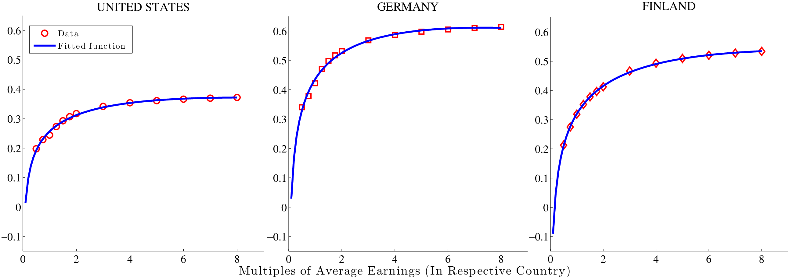
For each country, we follow the procedure described here. First, the OECD tax database provides estimates of the total labor income tax for all income levels between half of average wage earnings (hereafter, AW) to two times AW. The calculation takes into account several types of taxes (central government, local and state, social security contributions made by the employee, and so on), as well as many types of deductions and cash benefits (dependent exemptions, deductions for taxes paid, social assistance, housing assistance, in-work benefits, etc.).14 Using these estimates, we calculate the average labor income tax rate, \(\bar{\tau}(y)\), for 50%, 75%, 100%, 125%, 150%, 175%, and 200% of AW. However, tax rates beyond 200% of AW are also relevant when individuals solve their dynamic program. Fortunately, another piece of information is available from the OECD: the top marginal tax rate and the corresponding top bracket for each country. As described in more detail in Appendix B.1, we use this information to generate average tax rates at income levels beyond two times AW. Then, we fit the following smooth function to the available data points:15 \[ \bar{\tau}(y/AW)=a_{0}+a_{1}(y/AW)+a_{2}(y/AW)^{\phi}. \]
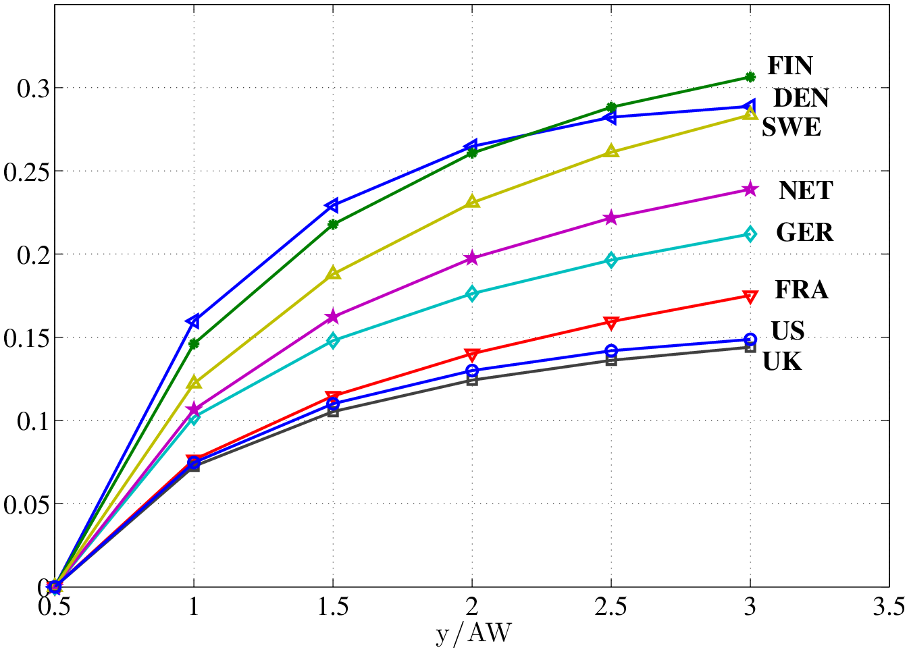
The parameters of the estimated \(\bar{\tau}(y)\) functions for all countries are reported in Appendix B.1, along with the \(R^{2}\) values. Although the assumed functional form allows for various possibilities, all fitted tax schedules turn out to be increasing and concave. The lowest \(R^{2}\) is 0.984 and the mean is 0.991, indicating a very good fit. In Figure 1, we plot the estimated functions for three countries: one of the two least progressive (United States), the most progressive (Finland), and one with intermediate progressivity (Germany).
Figure 2 plots the progressivity wedges computed from the estimated tax schedules for all countries in our sample. Specifically, each line plots \(PW(0.5,0.5k)\) and \(k=1,2,...,6\), which are essentially the wedges faced by an individual who starts life at half the average earnings in that country and looks toward an eventual wage level that is up to six times his initial wage. As seen in the figure, countries are ranked in terms of their progressivity. Consistent with what one could conjecture, the US and the UK have the least progressive tax system, whereas Scandinavian countries have the most progressive ones, and larger continental European countries are scattered between these two extremes. The differences also appear quantitatively large (although a more precise evaluation needs to await the quantitative analysis in the next section): for example, the marginal benefit of investment for a young worker in the US who invests today when his wage is \(0.5\times AW\) and expects to earn \(2\times AW\) in the future is 13% lower than in a flat-tax system. The comparable loss is 27% in Denmark and Finland. These differences grow with the ambition level of the individual, dampening human capital investment, especially at the top of the distribution.
3.2 Taxes and Inequality: Cross-Country Empirical Facts
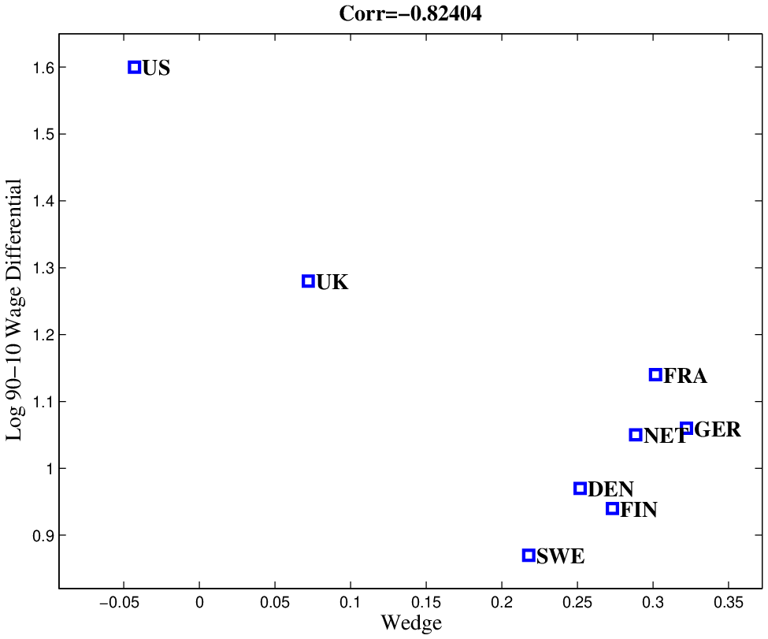
The wage inequality data come from the OECD’s Labour Force Survey database and are derived from the gross (before-tax) wages of full-time, full-year (or equivalent) workers.16 This is the appropriate measure for the purposes of this paper, as it more closely corresponds to the marginal product of each worker (and, hence, his wage) in the model. The fact that the inequality data pertain to before-tax wages is important to keep in mind; if the data were for after-tax wages, the correlation between progressivity and inequality would be mechanical and, thus, not surprising at all. Furthermore, we focus on male workers to avoid potential selection issues that may arise due to wide differences in female labor force participation rates across countries.
We normalize AW in each country to 1 and focus on \(PW(0.5,2.5)\) as the measure of progressivity. Similarly, when we calculate \(PW^{*}\) for a given country, we use the average hours per person in that country between 2001 and 2005 for \(n_{i}\) in equation (8), and the average of the same variable across all countries for \(n_{\text{avg}}.\)17 Finally, for brevity, in the rest of the paper we will refer to the “log 90-10 wage differential” simply as “L90-10,” and similarly for the other wage differentials.
Figure 3 plots the relationship between L90-10 and the progressivity wedge in the 2000s. Countries with a smaller wedge—meaning a less progressive tax system and, therefore, a smaller distortion in human capital investment—have higher wage inequality. The relationship is also quite strong with a correlation of –0.82.18 (Repeating the same calculation using \(PW^{*}\) yields the same correlation.) Both relationships are consistent with the human capital model with progressive taxes presented above.
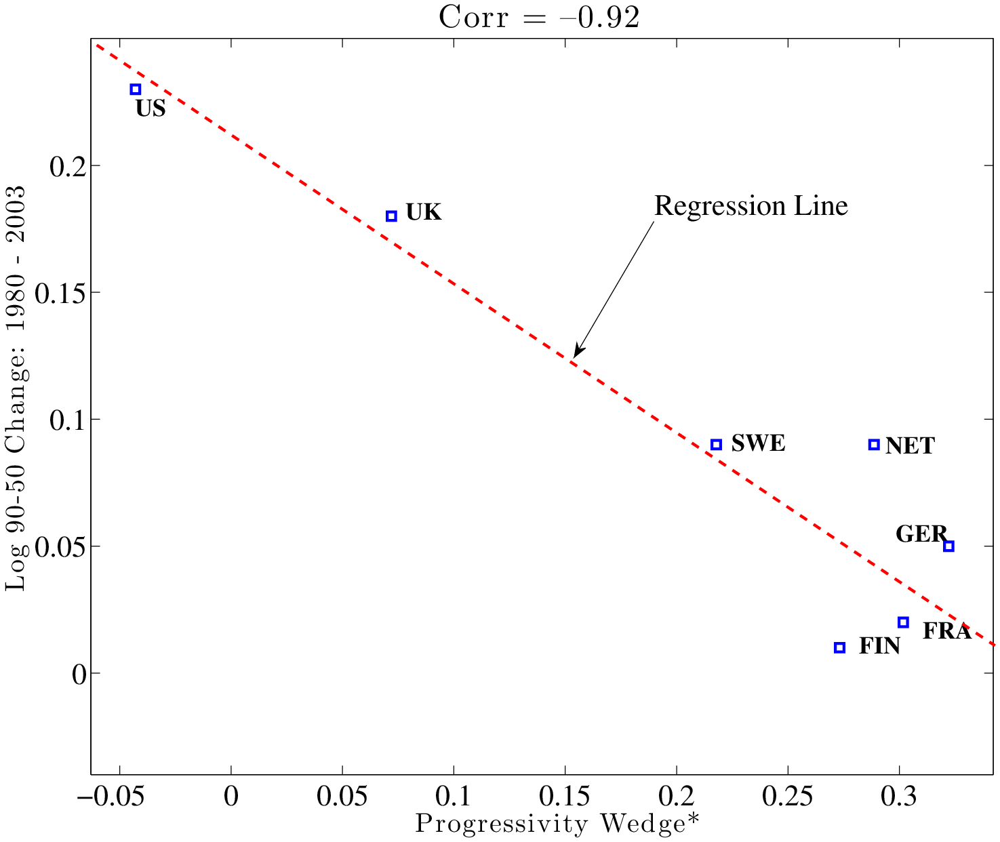
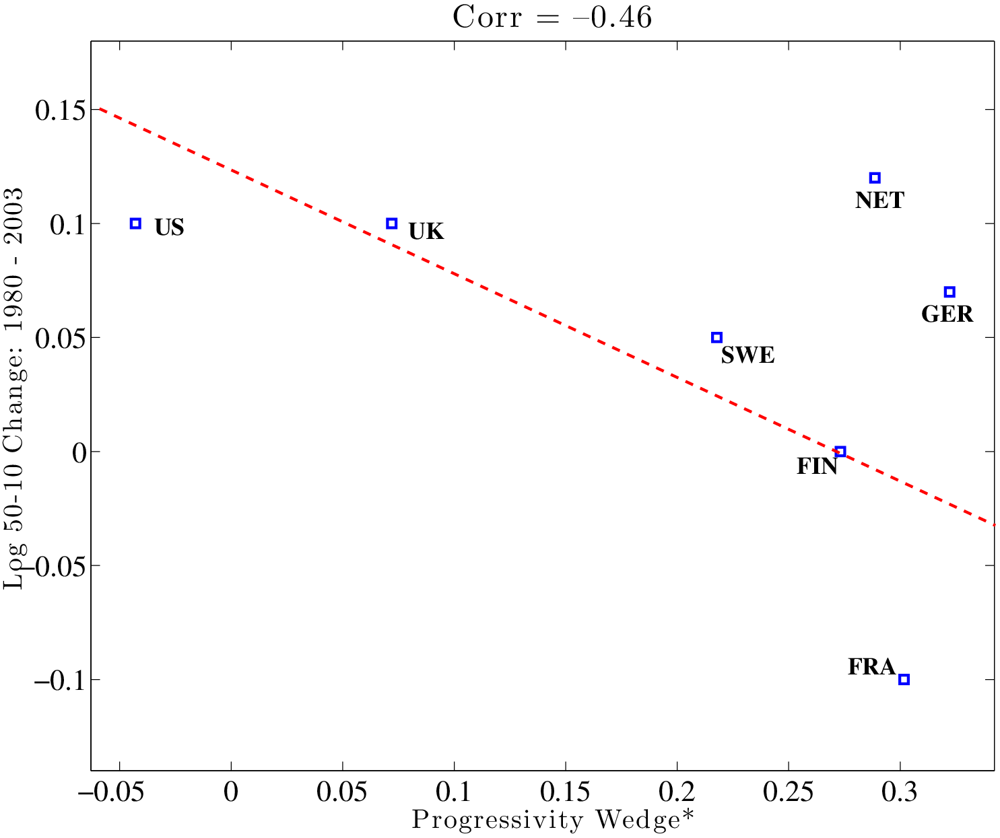
We next turn to the change in inequality over time. Figure 4 plots \(PW^{*}\) versus the change in L90-50 (left panel) and L50-10 (right panel). Countries with a more progressive tax system in the 2000s have experienced a smaller rise in wage inequality since the 1980s. The relationship is especially strong at the top of the wage distribution and weaker at the bottom: the correlation between progressivity and the change in L90-50 is very strong (\(-0.92\)), whereas the correlation with L50-10 is weaker (\(-0.46\)); see Figure 4. This result is consistent with the idea that the distortion created by progressivity is likely to be effective especially strongly at the upper end, where human capital accumulation is an important source of wage inequality, but less so at the lower end, where other factors, such as unionization, minimum wage laws, and so on, could be more important.
Finally, Table 2 gives a more complete picture of the differences between the two definitions of wedges. The top panel reports the correlation of each wedge measure with log wage differentials, which reveals that the adjustment for utilization rates through labor hours makes little difference in the correlations in 2003. Turning to the change in inequality over time (bottom panel), the simple wedge measure has a somewhat lower correlation with log wage differentials. However, adjusting for average hours per person strengthens these correlations to \(-0.77\) for the L90-10, and to \(-0.92\) for L90-50 (plotted in the left panel of Figure 4). We conclude that progressivity is strongly correlated with inequality both in the cross-section and over time, especially above the median of the distribution.
Overall, these findings reveal a close relationship between progressivity and wage inequality, which motivates the focus of this paper. However, on their own, these correlations fall short of providing a quantitative assessment of the importance of the tax structure. For this purpose, we now take the model to the data.
| Measure of Wedge: | ||
| \(PW(0.5,2.5)\) | \(PW^{*}(0.5,2.5)\) | |
| Wage differential | ||
| in 2003: | ||
| \(\quad\)L90-10 | \(-.82\) | \(-.82\) |
| \(\quad\)L90-50 | \(-.84\) | \(-.67\) |
| \(\quad\)L50-10 | \(-.72\) | \(-.85\) |
| \(\Delta\) Wage differential | ||
| from 1980 to 2003: | ||
| \(\quad\)L90-10 | \(-.45\) | \(-.77\) |
| \(\quad\)L90-50 | \(-.67\) | \(-.92\) |
| \(\quad\)L50-10 | \(-.16\) | \(-.46\) |
4 Parameter Choices
We now discuss the parameter choices for the model. First, our quantitative analysis focuses on steady states of the model described in Section 2. Second, we focus on male workers so as to avoid potential selection issues across countries related to different labor market participation rates for female workers. Our basic calibration strategy is to take the United States as a benchmark and pin down a number of parameter values by matching certain targets in the US data.19 We then assume that other countries share the same parameter values with the US along unobservable dimensions (such as the distribution of learning ability), but differ in the dimensions of their labor market policies that are feasible to model and calibrate (specifically, consumption and labor income tax schedules and the retirement pension system). We then examine the differences in economic outcomes—specifically in wage dispersion and labor supply—that are generated by these policy differences alone.
A model period corresponds to one year of calendar time. Individuals enter the economy at age 20 and retire at 65 (\(S=45\)). Retirement lasts for 20 years and everybody dies at age 85. The net interest rate, \(r\), is set equal to 2%, and the subjective time discount rate is set to \(\beta =1/\left (1+r\right)\). The curvature of the human capital accumulation function, \(\alpha,\) is set equal to 0.80, broadly consistent with the existing empirical evidence (see Browning et al. (1999), Table 2.3). In Appendix E, we conduct sensitivity analyses with respect to \(\alpha\) and consider cross-country variation in retirement age \(S\).
Utility Function. Preferences over consumption, \(c,\) and leisure time, \(1-n,\) are given by this common separable form: u(c,n)=(c)+.
This specification yields two parameters to calibrate: the curvature of leisure, \(\varphi,\) and the utility weight attached to leisure, \(\psi\). These parameters are jointly chosen to pin down the average hours worked in the economy, as well as the average Frisch labor supply elasticity. In 2003, the average annual hours worked by American males was 1,890 hours, or approximately 5.2 hours per day (Heathcote et al. (2010), figure 2). Taking the discretionary time endowment of an individual to be 13 hours per day, we get \(\overline{n}=5.2/13=0.4\).20
With power utility, the theoretical Frisch elasticity of labor supply is given by \((1-n)/(n\varphi).\) Because in this model, labor supply, \(n\), varies across individuals, there is a distribution of Frisch elasticities. We simply target the Frisch elasticity implied by the average labor hours, \(\overline{n}\). The empirical target we choose is 0.3, which is consistent with the estimates for male workers surveyed by Browning et al. (1999), which range from zero to 0.5.21 As will become clear in the sensitivity analysis conducted below, the model’s performance improves with a higher elasticity, so we opt for a more conservative value in our baseline calibration.
| Parameter | Description | Value | ||
| \(\varphi\) | Curvature of utility of leisure | \(5.0\) (Frisch = 0.3) | ||
| \(\psi\) | Weight on utility of leisure | \(0.20\) | ||
| \(\alpha\) | Curvature of human capital function | $0.$80 | ||
| \(S\) | Years spent in the labor market | \(45\) | ||
| \(T-S\) | Retirement duration (years) | \(20\) | ||
| \(r\) | Interest rate | \(0.02\) | ||
| \(\beta\) | Time discount factor | \(1/(1+r)\) | ||
| \(\delta\) | Depreciation rate of skills (annual) | \(1.5\%\) | ||
| \(E\left [h^{j}_{0}\right]\) | Average initial human capital (scaling) | \(4.95\) | ||
| Parameters calibrated to match data targets | ||||
| \(E\left [A^{j}\right]\) | Average ability | \(0.195\) | ||
| \(\sigma \left (h^{j}_{0}\right)/E\left [h^{j}_{0}\right]\) | Coeff. of variation of initial human capital | \(0.076\) | ||
| \(\sigma \left [A^{j}\right]/E\left [A^{j}\right]\) | Coeff. of variation of ability | \(0.396\) | ||
| \(\gamma\) | Dispersion of Markov shock | \(0.23\) | ||
| \(p\) | Transition probability for Markov shock | \(0.90\) | ||
| \(\chi\) | Maximum investment time on the job | 0\(.50\) | ||
Distributions: Learning Ability, Initial Human Capital, and Shocks. Agents have two individual-specific attributes at the time they enter the economy: learning ability and initial human capital endowment. We assume that these two variables are jointly uniformly distributed in the population and are perfectly correlated with each other.22 Although the assumption of perfect correlation is made partly for simplicity, a strong positive correlation is plausible and can be motivated as follows. The present model is interpreted as applying to human capital accumulation after age 20 and, by that age, high-ability individuals will have invested more than those with low ability, leading to heterogeneity in human capital stocks at that age, which would then be very highly correlated with learning ability. Indeed, Huggett et al. (2011) estimate the parameters of the standard Ben-Porath model from individual-level wage data and find learning ability and human capital at age 20 to be strongly positively correlated (corr: 0.792). Making the slightly stronger assumption of perfect correlation allows us to collapse the two-dimensional heterogeneity in \(A^{j}\) and \(h^{j}_{0}\) into one, speeding up computation significantly.
Therefore, this jointly uniform distribution of \((A^{j},h^{j}_{0})\) yields four parameters to be calibrated. \(E\left [h^{j}_{0}\right]\) is a scaling parameter and is simply set to a computationally convenient value, leaving three parameters: (i) the cross-sectional standard deviation of initial human capital, \(\sigma \left (h^{j}_{0}\right),\) (ii) the mean learning ability, \(E\left [A^{j}\right]\), and (iii) the dispersion of ability, \(\sigma \left (A^{j}\right).\) The idiosyncratic shock process, \(\epsilon,\) is assumed to follow a first-order Markov process, with two possible values, \(\left \{1-\gamma,1+\gamma \right \}\), and a symmetric transition matrix with \(\Pr (\epsilon '=x|\epsilon =x)=p\). This structure yields two more parameters, \(\gamma\) and \(p\), to be calibrated—for a total of five parameters. The sixth and last parameter is \(\chi\) (maximum investment allowed on the job). Finally, because there is measurement error in individual-level wage data, we add a zero mean i.i.d. disturbance to the wages generated by the model (which has no effect on individuals’ optimal choices).
Data Targets. Our calibration strategy is to require that the wages generated by the model be consistent with micro-econometric evidence on the dynamics of wages found in panel data on US households. Specifically, these empirical studies begin by writing a stochastic process for log wages (or earnings) of the following general form:
\[ \]
\[\begin{aligned} $$ \log \widetilde{w}^{j}_{s} & =\underset{\textrm{systematic comp.}}{\underbrace{\left [a^{j}+b^{j}s\right]}}+\underset{\textrm{stochastic comp.}}{\underbrace{z^{j}_{s}+\varepsilon ^{j}_{s}}}\\ z^{j}_{s} & =\rho z^{j}_{s-1}+\eta ^{j}_{s}, $$ \end{aligned}\]\[ \]
where \(\widetilde{w}^{j}_{s}\) is the “wage residual” obtained by regressing raw wages on a polynomial in age; the terms in brackets, \(\left [a^{j}+b^{j}s\right]\), capture the individual-specific systematic (or life cycle) component of wages that result from differential human capital investments undertaken by individuals with different ability levels, and \(z^{j}_{s}\) is an AR(1) process with innovation \(\eta ^{j}_{s}\). Finally, \(\varepsilon ^{j}_{s}\) is an iid shock that could capture classical measurement error that is pervasive in micro data and/or purely transitory movements in wages. For concreteness, in the discussion that follows, we refer to the first two terms in brackets as the “systematic component” of wages and to the latter two terms as the “stochastic component.”
We begin with \(\varepsilon _{s}\) and assume that it corresponds to the measurement error in the wage data. Based on the results of the validation studies from the US wage data,23 we take the variance of the measurement error to be 10% of the true cross-sectional variance of wages in each country, which yields \(\sigma ^{2}_{\varepsilon}=0.034\) for the United States. We then choose the following six moments from the US data to pin down the six parameters identified earlier:
- the mean log wage growth over the life cycle (informative about \(E(A^{j})\)),
- the ratio of minimum to mean wage (informative about \(\chi\)),
- the cross-sectional dispersion of wage growth rates, \(\sigma (b^{j})\) (informative about \(\sigma (A^{j})\)),
- the cross-sectional variance of the stochastic component (informative about \(\gamma\)),
- the average of the first three autocorrelation coefficients of the stochastic component of wages (informative about \(p\)), and
- L90-10 in the population (which, together with the previous moments, is informative about \(\sigma (h^{j}_{0})\)).
The target value for the mean log wage growth over the life cycle (i.e., the cumulative growth between ages 20 and 55) is 45%. This number is roughly the middle point of the figures found in studies that estimate lifecycle wage and income profiles from panel data sets, such as the Panel Study of Income Dynamics (PSID); see, for example, Gourinchas and Parker (2002) and Guvenen (2007). The second data moment is the legal minimum wage in the economy relative to the average wage of full-time workers, which, according to the OECD,24 was 0.29 for the US in the early 2000s. The third moment is the cross-sectional standard deviation of wage growth rates, \(\sigma (b^{j})\). The estimates of this parameter are quite consistent across different papers, regardless of whether one uses wages or earnings. We take our empirical target to be 2%, which represents an average of these available estimates (Baker (1997), Haider (2001), and Guvenen (2009)).
The next two moments capture key statistical properties of the stochastic component of wages in the data. These moments are (i) the unconditional variance of the stochastic component, (\(z_{s}+\varepsilon _{s}\)), as well as (ii) the average of its first three autocorrelation coefficients. The empirical counterparts for these moments are taken from Haider (2001), which is the only study that estimates a process for hourly wages and allows for heterogeneous profiles. The figure for the unconditional variance can be calculated to be 0.109 and the average of autocorrelations is calculated to be 0.33, using the estimates in Table 1 of Haider’s paper. Further details and justifications for these parameter choices are in Appendix D.25
Our sixth, and final, moment is L90-10 in 2003. Adding this moment ensures that the calibrated model is consistent with the overall wage inequality in the US in that year, which is the benchmark against which we measure all other countries. The empirical target value is 1.60 (from the OECD’s Labour Force Survey). Table 4 displays the empirical values of the six moments, as well as their counterparts generated by the calibrated model. As can be seen here, all moments are matched fairly well.
One point to note is that even though the average of the first three autocorrelation coefficients is pretty low (0.33), the stochastic component includes measurement error as well, which is i.i.d. The Markov shocks themselves have a first order annual autocorrelation of 0.80 (implied by \(p=0.90\), shown in Table 3).
| Moment | Data | Model |
| Mean log wage growth from age 20 to 55 | 0.45 | 0.44 |
| Ratio of minimum to mean wage rate | 0.29 | 0.30 |
| Cross-sectional standard deviation of wage growth rates | 2.00% | 2.03% |
| Cross-sectional variance of stochastic component | 0.109 | 0.106 |
| Average of first three autocorrelation coeff. of stochastic component | 0.33 | 0.34 |
| L90-10 in 2003 | 1.60 | 1.60 |
Benefits System and the Government Budget. Pension systems vary greatly across countries in their generosity, their duration, as well as in how much redistribution they entail. We provide the exact formulas for the pension system of each country in Appendix B.4. Whatever surplus (or deficit) remains in the budget after the benefits is distributed to (or collected from) individuals in a lump-sum manner.26
Consumption Taxes. The average tax rate on consumption is taken from McDaniel (2007), who provides estimates for 15 OECD countries for the period 1950 to 2003 by calculating the total tax revenue raised from different types of consumption expenditures and dividing this number by the total amount of corresponding expenditure. McDaniel (2007) does not provide an estimate for Denmark, so we set this country’s consumption tax equal to that of Finland, which has a comparable value-added tax (VAT) rate.
5 Quantitative Results
In this section, we begin by presenting the implications of the calibrated model for wage inequality differences across countries at a point in time. We then provide decompositions that quantify the separate effects of progressivity, average income tax rates, consumption taxes, and the pension system on these results. We next turn to the change in inequality over time and provide a comparison between the United States and Germany from 1983 to 2003. The model statistics below are computed from 10,000 simulated lifecycle paths for individuals drawn from the joint probability distribution of \((A^{j},h^{j}_{0})\).
5.1 Cross-Sectional Results: the 2000s
Figure 5 plots L90-10 for each country in the data against the value predicted by the calibrated model. The correlation between the simulated and actual data is 0.91 (and the countries line up nicely along the regression line), suggesting that the model is able to capture the relative ranking of these eight countries in terms of overall wage inequality observed in the data. To explore how the model fares at different parts of the wage distribution, the middle panel of Figure 5 repeats the same exercise for L90-50 and the bottom panel does the same for L50-10. In both cases, the model-data correlations are high: 0.85.
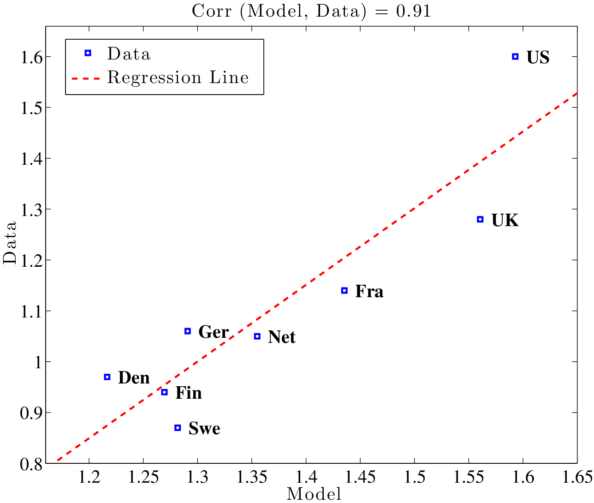
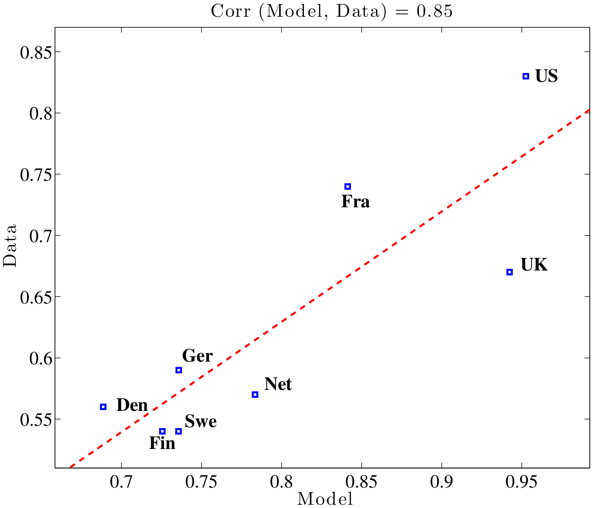
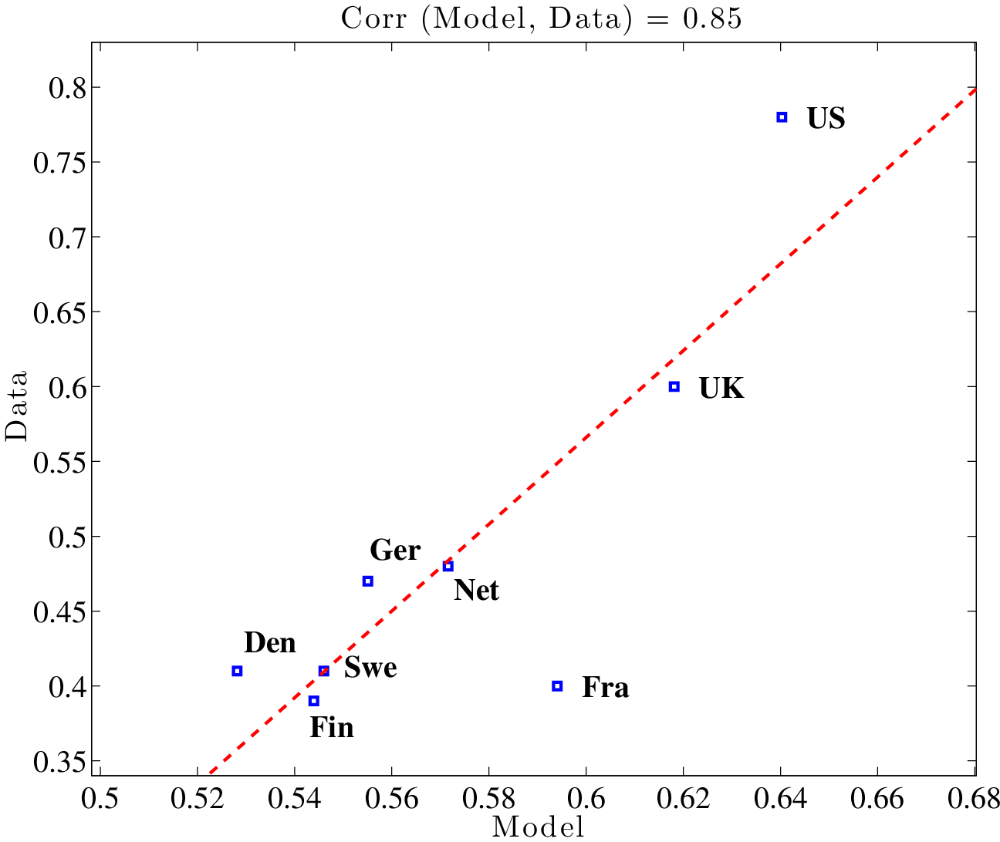
In Table 5, we quantify the importance of taxes for cross-country differences in inequality. The first two columns report L90-10 in the data for all countries, first in levels (second column) and then expressed as a deviation from the US, which is our benchmark country (third column). For example, in Denmark L90-10 is 0.97, which is 0.63 (i.e., 63 log points) lower than that in the US. The third and fourth columns display the corresponding statistics implied by the calibrated model. Again, for Denmark, the model generates an L90-10 that is 0.38 below what is implied by the model for the US. Therefore, the model accounts for 60% (\(=38/63\)) of the difference in L90-10 between the US and Denmark, reported in column (e). Similar comparisons show that the model does quite well in explaining the level of wage inequality in Germany but poorly in explaining the UK. The fraction explained by the model ranges from 35% for France to 56% for Germany. Overall, the model accounts for 48% of the actual gap in inequality between the US and the CEU in 2003.
To see which part of the wage distribution is better captured by the model, the next two columns display the same calculation performed in column (e), but now separately for L90-50 (f) and L50-10 (g). For all countries in the CEU, the model explains the upper tail inequality much better than the lower tail inequality. For example, for Denmark, the model explains 97% of L90-50 versus only 31% of L50-10. In fact, the model accounts for at least 65% of L90-50 for all countries in the CEU, averaging 84% across all countries, whereas it accounts for on average only 24% of L50-10. That our model does a better job at explaining inequality at the upper end (above the median) will be a recurring theme of this paper. This finding is consistent with the idea that progressive taxation affects the human capital investment of high-ability individuals more than others and, therefore, the mechanism is more effective above the median of the wage distribution.27 Finally, a notable exception to these generally strong findings is the UK, which is an important outlier: the model explains very little of the difference between the UK and US at the upper tail (6% to be exact) and only slightly more (13%) at the lower end.
| L90-10 | L90-50 | L50-10 | |||||
| Data | Model | % explained | % exp. | % exp. | |||
| Level | \(\Delta\) from US | Level | \(\Delta\) from US | (d)/(b) | |||
| (a) | (b) | (c) | (d) | (e) | (f) | (g) | |
| Denmark | 0.97 | 0.63 | 1.22 | 0.38 | 0.60 | 0.97 | 0.31 |
| Finland | 0.94 | 0.66 | 1.27 | 0.33 | 0.49 | 0.78 | 0.25 |
| France | 1.14 | 0.46 | 1.44 | 0.16 | 0.35 | 1.23 | 0.12 |
| Germany | 1.06 | 0.54 | 1.29 | 0.30 | 0.56 | 0.90 | 0.28 |
| Netherlands | 1.05 | 0.55 | 1.36 | 0.24 | 0.43 | 0.65 | 0.23 |
| Sweden | 0.87 | 0.73 | 1.28 | 0.31 | 0.43 | 0.75 | 0.26 |
| CEU | 1.00 | 0.59 | 1.31 | 0.29 | 0.48 | 0.84 | 0.24 |
| UK | 1.28 | 0.32 | 1.56 | 0.03 | 0.10 | 0.06 | 0.13 |
| US | 1.60 | 0.00 | 1.60 | 0.00 | – | – | – |
Decomposing the Effects of Different Policies. The baseline model incorporates several differences between the labor market policies of the US and those of the CEU countries. Here, we quantify the separate roles played by each of these components for the results presented in the previous section. We conduct three decompositions. First, we assume that countries in the CEU have the same retirement pension system as the US but differ in all other dimensions considered in the baseline model. This experiment separates the role of the tax system for wage inequality from that of the pension system. Second, we also set the consumption taxes of each country equal to that in the US, but each country retains its own income tax schedule as in the baseline model. This experiment quantifies the explanatory power of the model that is coming from the income tax system alone. Third, we go one step further and assume that each country keeps the same progressivity of its income tax schedule but is identical in all other ways to the US, including the average income tax rate. This experiment isolates the role of progressivity alone. In each case, we adjust the lump-sum transfers to balance the government’s budget.
Table 6 reports the results. First, in column 2, we assume that all countries have the same pension system as the US. In panel A, the correlation between the data and model is only slightly lower than in the baseline case for all parts of the wage distribution. Turning to panel B, the fraction of the US-CEU difference explained by the model goes down—but only slightly—indicating that more than 95% of the model’s explanatory power is coming from taxes (both income and consumption taxes). Next, in column (3), we also eliminate the differences in consumption taxes across countries. The model-data correlations go further down but, again, somewhat modestly. In panel B, the explanatory power of the model that is attributable to income taxes alone ranges from 75% to 80% for the three measures of wage inequality. The difference between columns 2 and 3 provides a useful measure of the role of consumption taxes, which account for about 17% (\(=96\%-79\%\)) of the model’s explanatory power for L90-10.
| Benchmark | All taxes | Lab. Inc. Tax | Progressivity | |
| Diff. from Benchmark: | (1) | (2) | (3) | (4) |
| Progressivity | — | — | — | — |
| Average income taxes | — | — | — | set to US |
| Consumption tax | — | — | set to US | set to US |
| Benefits institutions | — | set to US | set to US | set to US |
| A. Correlation Between Data and Model | ||||
| 90-10 | 0.91 | 0.90 | 0.85 | 0.88 |
| 90-50 | 0.85 | 0.87 | 0.85 | 0.87 |
| 50-10 | 0.85 | 0.84 | 0.78 | 0.81 |
| B. Fraction of US-CEU Difference Explained by Model | ||||
| 90-10 | 0.48 | 0.46 (96%) \(^{\textrm{a}}\) | 0.38 (79%) | 0.32 (67%) |
| 90-50 | 0.84 | 0.79 (94%) | 0.67 (80%) | 0.55 (66%) |
| 50-10 | 0.24 | 0.23 (96%) | 0.18 (75%) | 0.16 (67%) |
a The numbers in parentheses express the fraction explained by the model in each column as a percentage of the benchmark case reported in column (1).
Next, we investigate whether the power of income taxes comes from differences in the average rates across countries or from differences in the progressivity structure. In other words, if continental Europe differed from the US only in the progressivity of its labor income tax system—but had the same average tax rate on labor income—how much of the differences in wage inequality found in the baseline model would still remain? To answer this question, we proceed as follows. First, adjusting the average tax rate to the US level—without affecting progressivity—requires some care. We show in Appendix B.2 how this can be accomplished. Then, using these hypothetical tax schedules, we solve each country’s problem, assuming that all countries have identical labor market policies (set to the US benchmark) and their tax schedules generate the same average tax rate as in the US when using individuals’ choices made using the US income tax schedule. In panel B of column 4, we see that progressivity alone is responsible for 2/3 of the explanatory power of the model for L90-10.
Notice that the decomposition we conducted here is not invariant to the order in which different features are eliminated. So, a valid question is whether this conclusion—that average tax rate differences do not matter much—is robust to changing this order. To investigate this, we repeated the last experiment reported in column 4, but instead of eliminating average tax rate differences and keeping progressivity intact, we flipped the order (same progressivity as the US, but match each country’s average tax rate). In this case, the model only accounts for 14% of L90-10 differences, 20% of L90-50, and 10% of L50-10. This experiment confirms our previous conclusion that average tax rate differences are responsible for only a small fraction of the differences in wage inequality.
In summary, the pension system and consumption taxes together are responsible for about 20% of the model’s explanatory power. The more important finding concerns the role of progressivity, which, for all practical purposes, is the key component of the income tax structure for understanding wage inequality differences. Differences in the average income tax rate do not appear to be very important for inequality differences.
The Role of Labor Supply Elasticity. We now conduct two sensitivity analyses with respect to the value of labor supply elasticity: we consider (i) the case with a high Frisch elasticity of 0.5 and (ii) the case with only an extensive margin: \(n\in \{0,0.40\}\). In each case, the model is recalibrated to match the same six targets in Table 4. (Appendix E contains further sensitivity analyses with respect to the values of \(\alpha,\delta\), \(\chi\), \(G\), as well as the treatment of capital income taxes.)
| Frisch = 0.5 | Discrete hours: \(n\in \{0,0.40\}\) | |||||
| L90-10 | L90-50 | Log 50-10 | L90-10 | L90-50 | Log 50-10 | |
| (a) | (b) | (c) | (d) | (e) | (f) | |
| Denmark | 0.69 | 1.07 | 0.40 | 0.34 | 0.53 | 0.21 |
| Finland | 0.57 | 0.88 | 0.31 | 0.29 | 0.43 | 0.17 |
| France | 0.39 | 1.32 | 0.16 | 0.17 | 0.56 | 0.07 |
| Germany | 0.68 | 1.01 | 0.40 | 0.29 | 0.42 | 0.17 |
| Netherlands | 0.48 | 0.70 | 0.27 | 0.27 | 0.38 | 0.17 |
| Sweden | 0.52 | 0.87 | 0.33 | 0.22 | 0.38 | 0.15 |
| CEU | 57% | 94% | 31% | 26% | 44% | 16% |
| UK | 13 | 6 | 17 | 2 | –3 | 6 |
In the first experiment we set \(\varphi =3.0,\) which implies a Frisch elasticity of 0.5. Table 7 reports the counterpart of the analysis we conducted for the benchmark model and reported in Table 5. Comparing the two tables makes it clear that a higher Frisch elasticity improves the model’s explanatory power across the board. Now the model can explain 57% of the US-CEU difference in L90-10 (compared with 48% in the benchmark case) and 94% of the upper tail inequality (from 84% before). However, the improvement in L50-10 is modest, going from 24% in the benchmark case up to 31%.
To better understand the role of the intensive margin of labor supply, we now examine another case where workers can only choose between full-time employment at fixed hours (\(n=0.40\)) and nonemployment. The parameters of the utility function are the same as in the baseline case. The results are reported in the last three columns of Table 7. Without the amplification provided by an intensive margin—and the resulting dispersion in hours across countries—the explanatory power of the model falls and, in some cases, it falls significantly. For example, the model accounts for 26% of the difference in L90-10. For the upper-end inequality, the difference is even larger: the model now explains 44%, half of the baseline value, and also much lower than the 94% in the high Frisch case. Finally, the already low explanatory power at the lower tail falls further from 24% in the baseline case to 16%.
These findings underscore the importance of the interaction of endogenous labor supply choice (with an intensive margin) with progressive taxation for understanding wage inequality differences across countries, especially above the median of the distribution.
5.2 Inequality Trends over Time: 1983–2003
We now turn from levels in 2003 to the change in wage inequality over time. As shown in Table 1, from early 1980s to the early 2000s, wage inequality increased significantly more in the United States (by 32 log points) compared with the CEU (6 log points). Can the human capital mechanisms studied so far help us understand this “widening” of the inequality gap as well? One challenge we face in trying to answer this question is that the tax schedules we derived above are only available for the years after 2001, whereas the tax structure has changed over time for several of the countries in our sample. Fortunately, for two countries in our sample—the US and Germany—we are also able to derive tax schedules for 1983, which allows us to conduct a two-country comparison in this section.
How to Introduce SBTC? As noted earlier, in the standard Ben-Porath model studied so far, the price of human capital \((P_{H})\) was simply a scaling factor and had no effect on any implication of the model, which is why we normalized it to 1 above. This is an important shortcoming when the goal is to study the changes in human capital investment over time in response to changes in the value of human capital, due to, for example, SBTC. Guvenen and Kuruscu (2010) proposed a tractable way to extend the Ben-Porath model that overcomes this difficulty. This extension basically involves introducing a second factor of production—raw labor (\(\ell\))—in addition to human capital, \(h\). The key assumption is that, unlike human capital, raw labor cannot be accumulated over the life cycle (it is fixed). Individuals supply both factors of production for a total hourly wage of \(\left (P_{H}h_{s}+P_{L}\ell \right)(1-i_{s})\) at age \(s,\) where \(P_{L}\) is now the price (wage) of raw labor. With this two-factor structure, a rise in \(P_{H}\) does increase human capital investment. So SBTC could be modeled as a rise in \(P_{H}\) over time with \(P_{L}\) fixed. (All parameters other than \(P_{H}\) remain essentially unchanged in calibration.) The formal statement of this model along with the calibration of SBTC are presented in Appendix E.7.
Comparing the United States and Germany.
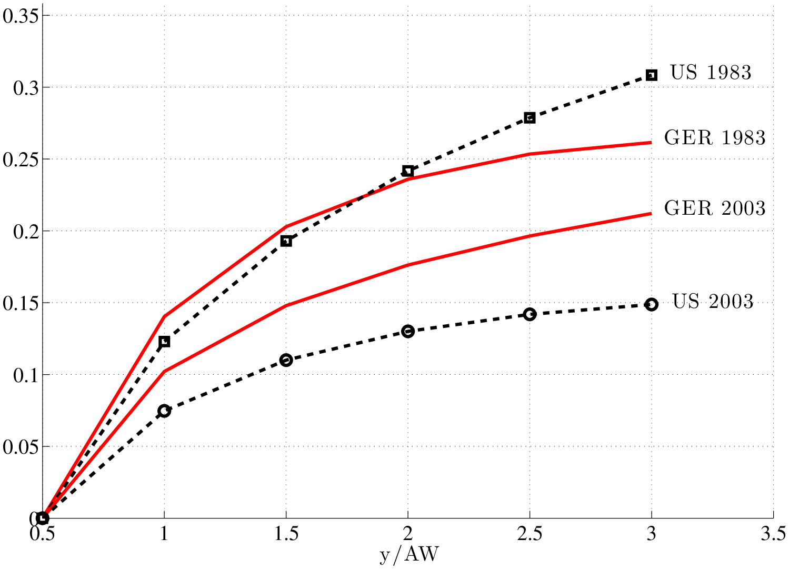
The procedure for constructing the 1983 tax schedules is described in Appendix B.3 and the resulting progressivity wedges are shown in Figure 6. As seen here, in 1983 the progressivity of the tax structure in the US and Germany was similar in both countries up to about twice the average earnings level. And above this point, the US actually had the more progressive system. Over time, the US became much less progressive, whereas the change in Germany was more gradual, making the US tax schedule much flatter than that of Germany over time.
Using these schedules, we conduct three experiments.28 In the first experiment, we assume that the tax schedules remained fixed throughout this period. We choose one parameter that controls the skill bias of technology, \(P_{H},\) to match the 32 log points rise in L90-10 in the US during the period. Note from column (1) of Table 8 that, in the data, L90-10 rose by only 13 log points in Germany during the same period. Turning to the model and assuming that Germany has been subject to the same SBTC as the US, the model generates a rise of 19 log points in L90-10 for Germany. Thus, whereas the inequality gap widens in the data by \(32-13=19\) log points, the model predicts \(32-19=13\) log points, explaining 68% (13/19) of the observed difference in the data.
| Data | Model | |||
| (1) | (2) | (3) | (4) | |
| Taxes: | Fixed | Changing | Changing | |
| SBTC: | Calibrated to US | Fixed | Calibrated to US | |
| Panel A: Change in L90-10 | ||||
| US | 0.32 | 0.32\(^{a}\) | 0.21 | 0.32\(^{a}\) |
| GER | 0.13 | 0.19 | 0.01 | 0.09 |
| \(\Delta\)(US-GER) | 0.19 | 0.13 | 0.20 | 0.22 |
| Panel B: Change in L90-50 | ||||
| US | 0.22 | 0.23 | 0.15 | 0.23 |
| GER | 0.05 | 0.14 | 0.01 | 0.06 |
| \(\Delta\)(US-GER) | 0.17 | 0.09 | 0.14 | 0.17 |
| Panel C: Change in L50-10 | ||||
| US | 0.10 | 0.09 | 0.06 | 0.09 |
| GER | 0.07 | 0.05 | 0.00 | 0.03 |
| \(\Delta\)(US-GER) | 0.02 | 0.04 | 0.06 | 0.06 |
Second, in column (3), we consider the case where the only change over time is in the tax schedules. We do not recalibrate any parameter to match targets in 1983. In the US, L90-10 rises substantially—by 21 log points—with no SBTC. Hence, the flattening of the tax schedule alone accounts for a significant fraction (about 2/3) of the rise in US wage inequality during this time. To our knowledge, this result is new in the literature. In contrast to the US, wage inequality barely changes (by 1 log point) in Germany. This experiment suggests that the dramatic fall in progressivity in the US and the small change in Germany alone could explain almost all of the widening inequality gap! Third, we now incorporate the change in tax schedules and re-calibrate SBTC such that we match the change in L90-10 for the US.29 Now, L90-10 rises by 9 log points in Germany. Thus, the model slightly over-explains—by 16% (\(=0.22/0.19-1.0\))—the widening gap in the data.
Panels B and C of the table explore how much of the widening gap has occurred at the top and bottom of the distribution. In the data, the L90-50 gap between the US and Germany rose by 17 log points, whereas the L50-10 gap increased by only 2 log points. Therefore, a remarkable fact is that virtually all of the rise in the inequality gap occurred because top-end inequality increased much more in the US (by 0.22) than in Germany (by 0.05). This observation strongly indicates that to understand the widening inequality gap, one needs to understand the economic forces that operate above the median of the wage distribution—and the human capital channels studied here provide one important candidate. To quantify these human capital effects, we turn to column (4): the model generates the same 17 log points rise in the L90-50 gap as in the data, and overstates the L50-10 gap observed in the data by 4 log points.
While these results are encouraging, a caveat must be noted. First, wage inequality in 1983 depends not only on the tax schedule in 1983, but also on the tax schedules that were in place several years prior, since the dispersion in human capital across individuals results from investments made in previous years. Clearly, the same comment applies to 2003. Although in our exercise we do not account for this fact, it is not clear which way this biases the results. This is because the US tax system was even more progressive before the Economic Recovery Tax Act of 1981, whereas the progressivity change in the years preceding 2003 (say, from 1990 to 2003) was more modest. Therefore, if we were to use a time average of tax schedules in our exercise (say, 1973 to 1983 and 1993 to 2003), we conjecture that the reduction in progressivity over time could be larger than we assumed in the experiment just described (which would attribute an even larger role to taxes). A more complete examination of this issue is an exciting topic for future research.
6 Microeconomic Evidence on the Mechanism
The model also makes predictions about how the lifecycle profiles of wages and hours vary across countries. In particular, because progressivity dampens human capital investment, average wages should grow more slowly over the life cycle in the CEU. Similarly, because progressivity compresses the cross-sectional distribution of human capital investment, wage inequality should rise less over the life cycle in the CEU. Testing these two predictions requires repeated cross-sectional data (or panel data) on wages (to disentangle the age profile from time or cohort effects), which is difficult to obtain on a comparable basis for the CEU countries in our sample.30 An exception is the German Socio-Economic Panel (GSOEP), which includes information on wages and hours of German individuals and is available to outside researchers. In this section, we make use of this data set and the PSID for the United States to provide a two-country comparison of lifecycle profiles.
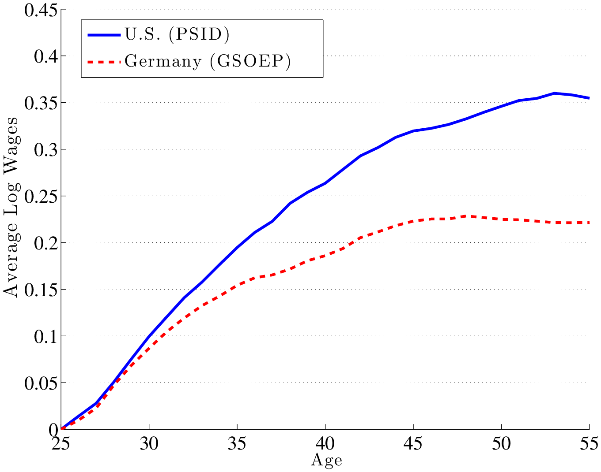
6.1 Wages and Hours over the Lifecycle: US vs Germany
We focus on male workers who are between 25 and 55 years of age to minimize the effects of early retirement behavior and the consequent fall in employment rates at later ages. The PSID data cover 1968-1992 and the GSOEP data cover 1984 to 2007.
Wages. Figure 7 plots the lifecycle profile of mean log wages in the US and Germany. The profiles are extracted from panel data by cleaning cohort effects following the usual procedure in the literature; see Appendix G for details. As seen in the figure, from age 25 to 55 the average wage profile rises by 36 log points in the US, but by only 22 log points in Germany, consistent with the prediction of the model that a more progressive tax system generates a flatter average wage profile. The model counterparts of these numbers are also of interest. In the model, the rise in the mean log wages (from age 25 to 55) in the US exceeds the same statistic in Germany by 16 log points, which compares well with the 15 log points figure just reported in the data.
Next, the left panel of figure 8 plots the lifecycle profile of wage inequality (again controlled for cohort effects) for the two countries. In the US, the variance of log wages rises by 30 log points, compared with 21 log points for Germany. Again, inequality rises more over the lifecycle in the less progressive country, consistent with the mechanism in the model. Turning to the model, it predicts a 16 log point gap between the two countries, compared to 9 log points (\(=30-21\)) found in the data.
Although in figure 8 we normalized the intercept to zero to help visual comparison, a relevant question is, how much wage inequality is there at the time workers enter the labor market? To answer this question, we compute the variance of log wages for workers between ages 23 and 27 and find it to be very similar in both countries: 0.251 in the US and 0.260 in Germany.31 This implies that virtually all the difference in wage inequality between Germany and the United States documented in the previous section is generated by the faster rise of inequality over the lifecycle in the US compared to Germany and almost none is due to differences in initial inequality. This is also true in the model: the variance of log wages averages 0.133 for the US and 0.148 for Germany in the first five years of the lifecycle. This is a small gap compared to the 16 log points faster rise in wage inequality between ages 25 and 55.
Finally, instead of controlling for cohort effects as we did above, one can alternatively control for time effects. Using this approach, mean log wages rise by 0.37 in the US compared with 0.27 in Germany. Inequality rises by 0.12 in the US compared with only 0.02 in Germany. Thus, while the magnitudes change, the rankings of the two countries remain the same under this alternative approach.32
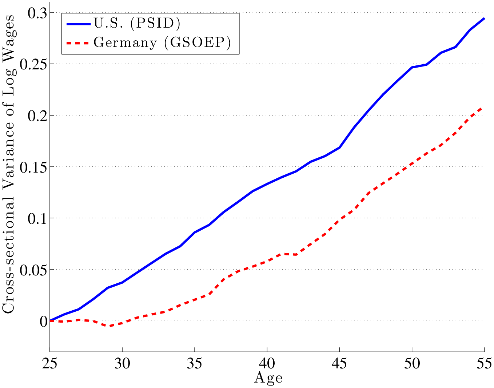
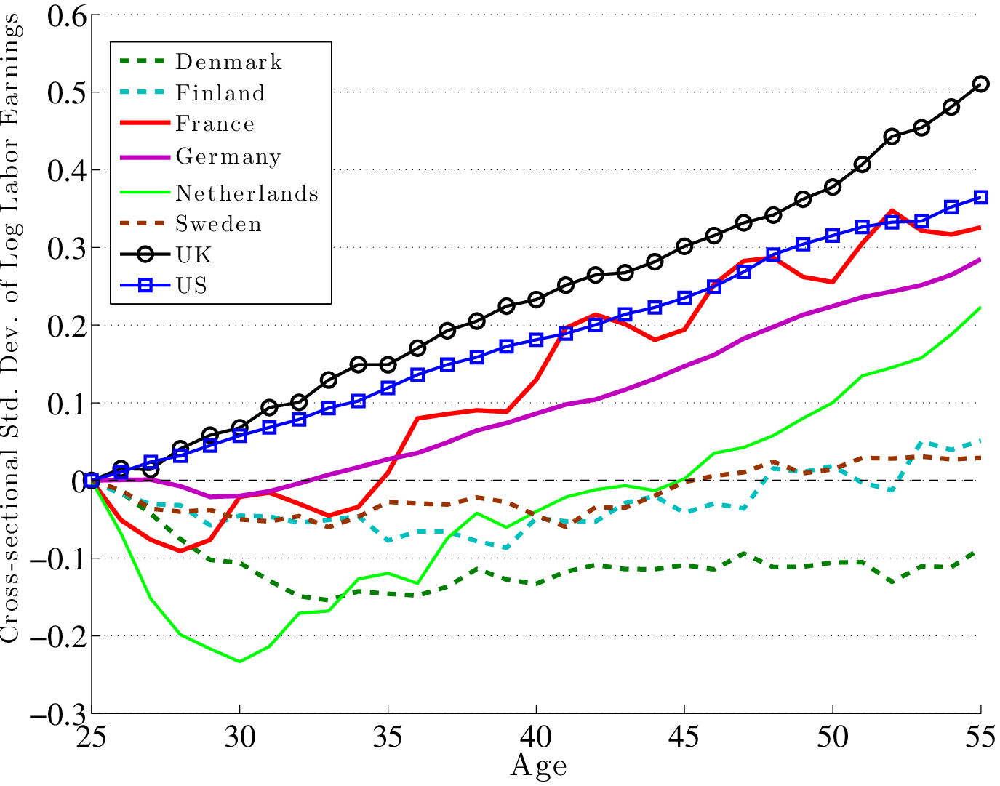
Earnings. Ideally, we would like to expand the comparison in the left panel of Figure 8 to all countries in our sample. However, this would require examining several distinct micro data sets—one for each country—which is beyond the scope of this paper. One option is to use the Luxembourg Income Study (LIS), which is a harmonized cross-country data set. One drawback of this data set is that it does not allow one to compute wages at different points in time, which is needed to clean cohort effects, as we did above. The data set does, however, contain earnings information at several points in time, which we use to construct life cycle profiles of earnings inequality for the six countries other than the US and Germany (right panel of Figure 8).33 For the US and Germany, we continue to use the PSID and GSOEP.
Three groups of countries can be discerned in the right panel. The UK and the US form the top group, with the largest rise in earnings inequality over the lifecycle. Scandinavian countries are concentrated at the bottom of the figure, with Sweden and Finland displaying increases of only 3 and 5 log points (in standard deviation), respectively, and Denmark recording a decline of 17 log points over the life cycle. Finally, the remaining three countries in western Europe—Germany, France, and Netherlands—line up in the middle. This ranking of countries is virtually the opposite of their ranking by progressivity (Figure 2) and is therefore consistent with the prediction of the model. We can also compute the model-data correlation for the change in the variance of log earnings between ages 25 and 55. This correlation is 0.86.
Labor Hours. We begin with the dispersion in hours. In Germany (GSOEP), the standard deviation of log hours is 0.369 compared with 0.324 in the United States (PSID).34 It is a well-known fact that incomplete markets models without preference heterogeneity severely understate the level of hours inequality (c.f. Erosa et al. (2009)) and our model is no exception. In the model, \(\sigma (\text{log}(n))=0.112\) in the US and \(0.128\) in Germany.35 Despite missing on the levels, the model is consistent with the fact that hours inequality is somewhat higher in Germany than in the US.
At first blush, it may seem surprising that the model implies higher dispersion in the more progressive country. The reason has to do with lump sum transfers, which happens to work in the opposite direction to progressivity in this two-country comparison. Specifically, the calibrated model implies that lump-sum transfers in Germany are more than twice as large as in the US. By their nature, these transfers create a larger wealth effect on low-income individuals (it is a larger fraction of their income) and, therefore, reduce their labor supply more than that of higher-income individuals. Thus, countries with higher lump-sum payments (or more redistributive government services), ceteris paribus, have higher hours inequality. To illustrate this point, we solve the model for Germany by fixing the lump sum transfers to the same fraction as in the US and assume the rest of the budget surplus yields no utility. The implied standard deviation of log hours falls from \(0.128\) to \(0.098\), which is now lower than in the US. Therefore, the predictions of the model regarding hours inequality is ambiguous, being driven by progressivity and the size of lump-sum transfers.
Overall, the lifecycle evidence on wages and hours documented in this section are in line with—and therefore provide further support to—the human capital mechanism that operates in our model.
6.2 Labor Productivity and Average Hours Across Countries
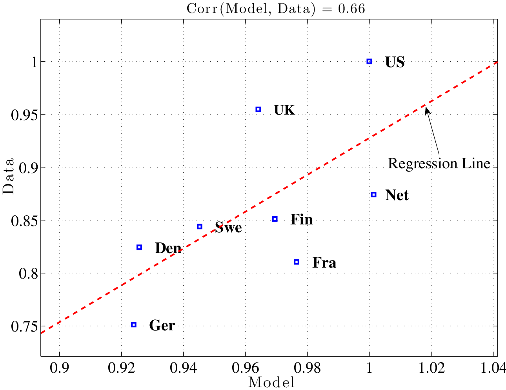
Hours Worked. We now turn to a comparison of average hours across countries. First, is well documented that Americans on average work much longer hours than Europeans (Prescott (2004), Ohanian et al. (2008)). Here we show that the same is true when we focus on males, and further examine if the variation is consistent with the variation in labor market policies captured by our model. The data are from Chakraborty et al. (2012), who provide average hours per male for a number of European countries by combining different data sources.36 The data are for males aged 25–54 in year 2000.
We begin by first comparing the US to Germany. An average German male works 25% fewer hours than his US counterpart (1467 hours versus 1952 hours per year). The model predicts a gap of 8%, and so explains only about a third of the empirical gap between these two countries.37 This is one statistic that clearly would be sensitive to the assumed Frisch elasticity. The alternative calibration with a Frisch elasticity of 0.5 discussed above (in Section 5.1) generates a 17% gap, which is closer to the data.
Next, we turn to a comparison of all 8 countries. We can also compute the average hours per male for the CEU. This statistic is 1612 hours, which is 17% lower than its US counterpart. The baseline model generates a small gap of 4% difference, whereas the high-Frisch model generates an 11% gap. Furthermore, one can also look at the average hours data, country by country, to see how well the model captures the variation across these 8 economies. Figure 9 plots the data against the model predictions. The model-data correlation is 0.66 for eight countries and is 0.73 when the UK is excluded. As before, raising the Frisch elasticity to 0.5 increases the correlation to 0.76.
Labor Productivity. We now examine the predictions of our model for cross-country productivity differences, which is clearly an important topic. One challenge here is that our model is calibrated to data on males only, whereas the most common measure of labor productivity is measured for all workers, including females (GDP per hours worked). Computing male productivity would require data on GDP per male worker, which is difficult (if not impossible) to come by. With this important caveat in mind, we compare labor productivity in each country to GPD per (male) hour in the model. The data are obtained from the OECD StatExtract web site, and labor productivity is expressed as a percentage of the US level. The second row reports the model counterpart.
Starting from the last column Table 9, which reports the CEU average, the model predicts that labor productivity in the CEU is 83.2% of the US level; the actual figure is 90.4%, so the model under-predicts productivity in the CEU. Looking at each country, the model does quite well for Finland and Sweden, does reasonable well for France, and does less well for the remaining countries. The UK is still the only outlier, in the sense that the model significantly overpredicts labor productivity for that country.38
| GDP per hour worked (% of US) | |||||||||
| Den. | Fin. | Fra. | Ger. | Net. | Swe. | UK | US | CEU | |
| Data | 88.8 | 79.8 | 95.8 | 92.7 | 99.3 | 85.9 | 78.4 | 100 | 90.4 |
| Model | 78.7 | 81.0 | 90.4 | 81.6 | 85.0 | 82.0 | 98.8 | 100 | 83.2 |
6.3 Educational Attainment Across Countries
To compare the educational attainment implied by the model to the data, we take 25-34 year old males who completed 4 years of college education, as reported in the Barro-Lee data set. We use data from 2005, which is the closest available year to 2003 (our benchmark year for the wage data analysis). Figure 10 reports the results. The model’s predictions align quite well with the data, as revealed by a model-data correlation of 0.87. Notice that the U.K. is an outlier as it was in the analysis of wage inequality. Removing it increases the correlation between the data and model to 0.94. Considering a broader definition of post-secondary schooling to include all individuals who enrolled in college for at least one year (i.e., college dropouts and those with a 2-year associate degree) has very little impact on results: the correlation rises slightly to 0.90 for the whole sample and is 0.94 again when the UK is excluded. Furthermore, notice that each country’s data aligns very well with the \(45^{0}\)–line, indicating that the levels for each country are also quite close to what is predicted by the model (again, with the exception of the UK).
One point to note about the Barro-Lee data set is that it reports a suspiciously low college attainment rate for Denmark: about 7% for 4-year colleges and 10% when 2-year colleges are included. We have been able to find comparable educational attainment rates (i.e., for 25–34 year old males who completed 2- or 4-year colleges) for the countries in our sample from OECD statistics office for year 2002.39 The attainment rate for Denmark is reported to be 25% when 2-year colleges are included. The attainment rates are also slightly different for other countries, although by smaller amounts. Using these data, the model-data correlation is 0.67 for the whole sample and is 0.73 when UK is left out.40
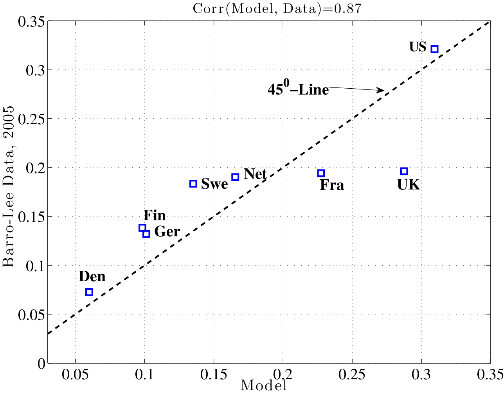
7 Conclusions
In this paper, we have studied the effects of progressive labor income taxation on wage inequality when a major source of wage dispersion is differential rates of human capital accumulation. To understand the main mechanisms and their quantitative importance, we have examined differences in wage inequality between the United States and seven European countries, which differ significantly in their income tax structures as well as in other dimensions of their labor market institutions. A common theme in our findings is that the model is significantly better at explaining inequality differences at the upper tail compared to the lower tail. Institutions, such as unionization, minimum wage laws (as in the case of France, discussed earlier), and centralized bargaining, are likely to be more important for the lower tail. However, since changes in the upper tail have been so important during this time (as we have documented), the mechanisms studied in this paper provide a promising direction for understanding US-CEU differences in wage inequality. We also found that the most important policy difference for wage inequality is the progressivity of the income tax system, which is responsible for about two-thirds of the model’s explanatory power.41 We also examined the changes in wage inequality over time. The model was able to account for all of the widening of the inequality gap between the US and Germany, when the actual changes in the tax schedules were also incorporated.
We have also explored the micro implications of the model, which provided further supporting evidence for the model. For example, the lifecycle profile of mean wages is flatter in Germany than in the United States, as implied by the higher progressivity in the former country. A similar result is found for within-cohort wage inequality in Germany and the US. Similarly, average hours for males is much lower in Germany than it is in the US. These observations are consistent with the predictions of the model and provide further support to the empirical relevance of the human capital mechanisms explored in this paper.
An alternative mechanism that is also consistent with the US-Europe inequality gap was proposed by Becker (1985). In his framework, workers choose both hours of work in the market and effort per hour. High ability workers in the US put more effort per hour (and are therefore more productive) than comparable workers in Europe because the return is relatively higher. Thus, wage inequality will be higher in the US than in Europe. An important difference between this mechanism and ours is that our model implies a widening of wage inequality over the life cycle in the US relative to Europe (as documented in Section 6.1), whereas Becker’s model implies that wage inequality would be constant over the lifecycle.
An alternative way of modeling for skill acquisition would be through “learning by doing (LBD),” which differs from human capital models in some subtle ways. To understand this, notice that in an LBD model, human capital is acquired by working longer hours. The marginal cost of work is given by the marginal utility of leisure, which is independent of the current tax rate. The marginal benefit is the increase in utility due to higher after-tax earnings both in the current period (higher earnings from longer hours) and future periods (higher wages because of accumulated skills). So, for example, if current taxes are raised without affecting future taxes, this would increase human capital investment in Ben-Porath as we saw in Section 2.2 (because the cost of investment is the current after-tax wage, which is lower now). In contrast, in an LBD model, this will decrease current hours of work because part of the marginal benefit of work (current after-tax earnings) falls. But if there is less work, there is less skill acquisition in an LBD model. This is one example where a change in taxes can increase investment in Ben-Porath while reducing it with LBD. However, there are many other cases where both models would have qualitatively similar implications (for example if future taxes are raised without affecting current taxes).
We have made several assumptions to make the quantitative exercise computationally feasible.42 One such assumption is that of complete markets. Instead, if markets were incomplete and there were binding borrowing constraints, progressivity could increase human capital investment (see, e.g., Manovskii (2002)). The question then is: which type of individual (high or low ability) is more likely to be borrowing constrained in a given region (US vs CEU)? The empirical evidence (although less than perfect) we are aware of for the US suggests that it is the low-income (hence likely low-ability) individuals who are more constrained. This is also consistent with the fact that the intergenerational correlation of lifetime income is positive and quite large, so high-ability individuals can borrow (or get transfers) from their richer parents, especially for human capital accumulation. Under this scenario, the low-ability in the CEU will invest more than what is predicted by our current model, whereas the high-ability in the CEU will invest similarly to what our model predicts (if they are less constrained). Because progressivity is higher in the CEU, this narrowing of the gap will be more pronounced in the CEU relative to the US. This would strengthen the results of the paper.
Finally, an important direction to extend the current framework would be by carefully modeling the differences between the US and the CEU in the financing of the education system as well as in the types of skills taught in schools in both places. This is a difficult but interesting question that is at the top of our future research agenda.
References
Supplemental (Online) Appendix for
“Taxation of Human Capital and Wage Inequality: A Cross-Country Analysis”
by Guvenen, Kuruscu, Ozkan
8 Theoretical Appendix: Derivations and Definitions
8.1 Derivation of the Optimal Investment Condition (eq. (7))
Here, we derive the optimal investment condition in the most general framework studied in this paper, described in Section 5.2. The optimality conditions presented earlier in the paper ((4), (5), and (7)) can all be obtained as special cases of this formulation.
Under the assumptions stated in Section 5.2 (i.e., setting \(\chi \equiv 1\), eliminating pension payments (\(\Omega \equiv 0\)), and setting idiosyncratic shocks to their mean value), the problem of the agent is given by
\[ \begin{aligned} V(h_{s},a_{s},s) &= \max _{c_{s},n_{s},Q_{s}}u((1+r)a_{s}+y_{s}(1-\bar{\tau}(y_{s}))-a_{s+1},1-n_{s})\\ &\quad + \beta V(h_{s+1},a_{s+1},s+1)\\ \textrm{s.t.}\qquad y_{s} &= (P_{L}l+P_{H}h_{s})n_{s}\left (1-i_{s}\right)\\ h_{s+1} &= (1-\delta)h_{s}+A_{j}\left ((\theta _{L}l+\theta _{H}h_{s})n_{s}i_{s}\right)^{\alpha}_{j} \end{aligned} \]
Letting \(Q_{s}=A\left ((\theta _{L}l+\theta _{H}h_{s})i_{s}\right)^{\alpha}_{j}\) and letting \(C_{j}(Q_{s})=\left (\frac{Q_{s}}{A_{j}}\right)^{1/\alpha}\) we have \[ y_{s}=(P_{L}l+P_{H}h_{s})n_{s}\left (1-i_{s}\right)=(P_{L}l+P_{H}h_{s})n_{s}-C_{j}(Q_{s})\frac{P_{L}l+P_{H}h_{s}}{\theta _{L}l+\theta _{H}h_{s}}. \] Note that total tax liability of the agent is given by \(y\bar{\tau}(y)\). The derivative of tax liability with respect to \(y\) gives the marginal tax rate. Thus, \(\tau (y)=\bar{\tau}(y)+y\bar{\tau}'(y)\). Using this expression, we obtain the following FOCs for this problem \[\begin{array}{ccc} (n_{s}): & & \left (P_{L}l+P_{H}h_{s}\right)\left (1-\tau (y_{s})\right)u_{1}(c_{s},1-n_{s})=u_{2}(c_{s},1-n_{s})\\ \$a_{s}): & & u_{1}(c_{s},1-n_{s})=\beta V_{2}(h_{s+1},a_{s+1},s+1)\\ \\\left (Q_{s}\right): & & C^{\prime}_{j}(Q_{S})\left (1-\tau (y_{s})\right)\frac{P_{L}l+P_{H}h_{s}}{\theta _{L}l+\theta _{H}h_{s}}u_{1}(c_{s},1-n_{s})=\beta V_{1}(h_{s+1},a_{s+1},s+1) \end{array}\] Envelope conditions are: \[\begin{array}{cccc} (a_{s}): & & V_{2}(h_{s},a_{s},s)=(1+r)u_{1}(c_{s},1-n_{s})\\ \\(h_{s}): & & V_{1}(h_{s},a_{s},s)=\left (P_{H}n_{s}-C_{j}(Q_{s})\frac{\left (P_{H}\theta _{L}-P_{L}\theta _{H}\right)l}{\left (\theta _{L}l+\theta _{H}h_{s}\right)^{2}}\right)\left (1-\tau (y_{s})\right)u_{1}(c_{s},1-n_{s})...\\ & & +\beta \left (1-\delta \right)V_{1}(h_{s+1},a_{s+1},s+1) \end{array}\]If we set (l=0$ and \(\theta _{H}=1\) we obtain the model in Section 2. In that case, combining the envelope conditions with the FOCs yields \[\begin{alignat*} {1} C^{\prime}_{j}(Q_{s})\left (1-\tau (y_{s})\right) & =n_{s+1}\underset{\frac{1}{1+r}}{\left (1-\tau (y_{s+1})\right)\underbrace{\frac{\beta u_{1}(c_{s+1},1-n_{s+1})}{u_{1}(c_{s},1-n_{s})}}}+\\ & +n_{s+1}\underset{\frac{1}{\left (1+r\right)^{2}}}{\left (1-\tau (y_{s+1})\right)\underbrace{\frac{\beta ^{2}u_{1}(c_{s+2},1-n_{s+2})}{u_{1}(c_{s},1-n_{s})}}}+.... \end{alignat*}\]
Rearranging this expression delivers equation (7): \[\begin{alignat*} {1} C^{\prime}_{j}(Q^{j}_{s})= & {\color{blue}{\color{black}{\color{black}\beta}}\mathinner{\color{black}\frac{1-\tau (y_{s+1})}{1-\tau (y_{s})}}}n_{s+1}+\beta ^{2}{\color{black}{\color{black}{\color{blue}\mathinner{\color{black}\frac{{\color{black}1-\tau (y_{s+2}}\mathclose{\color{black})}}{{\color{black}1-\tau (y_{s}}\mathclose{\color{black})}}}}}}n_{s+2}+...+\beta ^{S-s}{\color{blue}\mathinner{\color{black}\frac{1-\tau (y_{S})}{1-\tau (y_{s})}}}n_{S}. \end{alignat*}\]
Alternatively, if we set \(P_{H}=\theta _{H}\) and \(P_{L}=\theta _{L}\), we obtain a simplified version the model in Section 5.2, i.e. without shocks and upper bounds on investment in the job, in which case the optimality condition becomes \[\begin{alignat*} {1} C^{\prime}_{j}(Q^{j}_{s})= & {\color{black}\theta _{H}}\left ({\color{blue}{\color{black}{\color{black}\beta}}\mathinner{\color{black}\frac{1-\tau (y_{s+1})}{1-\tau (y_{s})}}}n_{s+1}+\beta ^{2}{\color{black}{\color{black}{\color{blue}\mathinner{\color{black}\frac{{\color{black}1-\tau (y_{s+2}}\mathclose{\color{black})}}{{\color{black}1-\tau (y_{s}}\mathclose{\color{black})}}}}}}n_{s+2}+...+\beta ^{S-s}{\color{blue}\mathinner{\color{black}\frac{1-\tau (y_{S})}{1-\tau (y_{s})}}}n_{S}\right). \end{alignat*}\]
8.2 Equilibrium Definition
Definition 1 A stationary recursive competitive equilibrium for this economy is a set of equilibrium decision rules, \(c(x)\), \(n(x)\), \(Q(x)\), \(i(x)\), and \(a'(\epsilon ',x)\); value functions, \(V(x)\) and \(W^{R}(x)\), for working and retirement periods, respectively, where \(x=(h,a,m;\epsilon,s,j)\) (notice the inclusion of \(j\) into this vector); a pricing function for Arrow securities, \(q(\epsilon '|\epsilon)\), and a measure \(\Lambda (x)\) such that
- Given the labor income tax function, \(\bar{\tau}(y)\), consumption tax, \(\bar{\tau}_{c}\), transfers, \(Tr,\) and government’s pension function \(\Omega\), individuals’ decision rules and value functions solve problems in (9) to (13) and in (14).
- Asset markets clear: \(\)\(\int _{x(:,\epsilon =\tilde{\epsilon})}a'(\epsilon ',x)d\Lambda (x)=0\) for all combinations of (\(\tilde{\epsilon},\epsilon '\)).43
- \(\Lambda (x)\) is generated by individuals’ optimal choices.
- The government budget balances:
\[ \]
\[\begin{aligned} $$ \int _{x(:,s<S)}\bar{\tau}_{n}(y(x))y(x)d\Lambda (x)+\int _{x}\bar{\tau}_{c}c(x)d\Lambda (x) & =G+Tr\\ & +\sum ^{T}_{s=R}\int _{x(:,s=S-1)}\Omega (\overline{y}^{j},m^{S}(x))d\Lambda (x). $$ \end{aligned}\]\[ \]
The first term in the government’s budget is the total tax revenue from labor income collected from all agents who are working and younger than retirement age. Similarly, the second term is the total tax revenue from the consumption tax, but it is collected from all agents including the retirees. On the right-hand side, the pension payments only depend on a worker’s ability through \(\overline{y}^{j}\) and the number of years she worked until retirement (\(m^{S}(x)\)), which in turn depends on the full state vector \(x\) at age \(S-1\). Therefore, we integrate the pension payments over the full state vector \(x\) conditioning on age \(S-1\) and then sum the same amount over all ages greater than \(S-1\) to find total pension payments.
8.3 Shocks to Ben-Porath Technology
It is instructive to discuss the possible implications of introducing the idiosyncratic shocks \(\epsilon\) also into the Ben-Porath technology. Shocks in our model are idiosyncratic, and it is not a priori clear why an idiosyncratic wage shock should affect the technology for learning; and even if they do, it is not clear how the dependence should be modeled. However, one could imagine these wage shocks to have an aggregate component, in which case it is probably a good idea to be consistent with the available evidence on the cyclical behavior of training and schooling. The evidence we are aware of indicates that training and schooling enrollment is either countercyclical or acyclical for men depending on the level of education (undergraduate vs graduate and depending on field); see, e.g., Bedard and Herman (2006) for a review of existing evidence.
Our current formulation is consistent with a countercyclical human capital investment, because a positive shock increases current earnings, and hence the opportunity cost of time, reducing investment. On the other hand, a positive shock to the learning technology will typically increase human capital investment. To see these arguments consider a two-period model, where shocks \(\epsilon\) affect both earnings in the current period and the human capital technology. For simplicity of the argument, we will ignore labor supply. Assume that human capital investment in the first period is taken after the realization of the shock. Then the problem of a worker is given by _{i}h(1-i)+Esubject to h’=h+A{}(hi){}. Note that our model corresponds to the case where \(\gamma =0\). It is easy to show that investment time in this model would be: i=. To be consistent with empirical evidence on the cyclicality of investment, the term \(\phi (\epsilon)\equiv E\left [\epsilon '|\epsilon \right]\epsilon ^{\gamma -1}\) must be a (weakly) decreasing function of \(\epsilon\). We can derive a precise condition by letting \(\epsilon\) follow an AR(1) process: \(\log \epsilon '=\rho \log \epsilon +\eta,\) where \(\eta\) is a mean-zero innovation.44
9 Country-Specific Labor Market Policies
9.1 Estimating Country-Specific Average Tax Schedules
Here we provide more details on the estimation of tax schedules described in Section 2.2. Define normalized income as \(\widetilde{y}\equiv y/AW.\) For each country, denote the top marginal tax rate with \(\tau _{\text{TOP}}\) and the top bracket \(\widetilde{y}_{\text{TOP}}\). The values for these variables are taken from the OECD tax database.45
If instead \(\widetilde{y}_{\text{TOP}}>2\) (which is only the case for the US and France), we do not know the marginal tax rate between \(\widetilde{y}=2\) and \(\widetilde{y}_{\text{TOP}}\). Thus, we first set \(\tau (2)=(\bar{\tau}(2)\times 2-\bar{\tau}(1.75)\times 1.75)/0.25\) and use linear interpolation between \(\tau (2)\) and \(\tau _{\text{TOP}}\). We have
\[ \]
\[\begin{aligned} \tau (\widetilde{y})= & \left \{\begin{array}{cc} \tau (2)+\frac{\tau _{\text{TOP}}-\tau (2)}{\widetilde{y}_{\text{TOP}}-2}(\widetilde{y}-2) & \qquad \quad \textrm{if}2<\widetilde{y}<\widetilde{y}_{\text{TOP}}\\ \tau _{\text{TOP}} & \textrm{if}\quad \widetilde{y}>\widetilde{y}_{\text{TOP}}. \end{array}\right. \end{aligned}\]\[ \]
Then the average tax rate function for \(\widetilde{y}>2\) is
\[ \]
\[\begin{aligned} \bar{\tau}(\widetilde{y})= & \left \{\begin{array}{cc} (\bar{\tau}(2)\times 2+\tau (\widetilde{y})\times (\widetilde{y}-2))/\widetilde{y} & \textrm{if}\quad 2<\widetilde{y}<\widetilde{y}_{\text{TOP}}\\ (\bar{\tau}(2)\times 2+\frac{(\tau (2)+\tau _{\text{TOP}})}{2}(\widetilde{y}_{\text{TOP}}-2)+\tau _{\text{TOP}}\times (\widetilde{y}-\widetilde{y}_{\text{TOP}}))/\widetilde{y} & \textrm{if}\quad \widetilde{y}>\widetilde{y}_{\text{TOP}} \end{array}\right. \end{aligned}\]\[ \]
We use this expression to compute \(\overline{\tau}\) for \(\widetilde{y}=3,4,...,8\) (in addition to the original average tax rate from OECD website). We then fit the functional form given in equation (8) to these 13 data points as explained in the text. The resulting coefficients are reported in Table A.2.
| \(\bar{\tau}(y/AW)=a_{0}+a_{1}(y/AW)+a_{2}(y/AW)^{\phi}\) | |||||
| Country: | \(a_{0}\) | \(a_{1}\) | \(a_{2}\) | \(\phi\) | \(R^{2}\) |
| Denmark | 1.4647 | \(-.01747\) | \(-1.0107\) | \(-.15671\) | 0.990 |
| Finland | 1.7837 | \(-.01199\) | \(-1.4518\) | \(-.11063\) | 0.999 |
| France | 0.5224 | \(\quad.00339\) | \(-.24249\) | \(-.41551\) | 0.993 |
| Germany | 1.8018 | \(-.01708\) | \(-1.3486\) | \(-.11833\) | 0.992 |
| Netherlands | 3.1592 | \(-.00790\) | \(-2.8274\) | \(-.03985\) | 0.984 |
| Sweden | 9.1211 | \(-.00762\) | \(-8.7763\) | \(-.01392\) | 0.985 |
| UK | 0.5920 | \(-.00390\) | \(-.32741\) | \(-.30907\) | 0.989 |
| US | 1.2088 | \(-.00942\) | \(-.94261\) | \(-.10259\) | 0.993 |
9.2 Deriving Tax Schedules with Different Progressivity but Same Average Tax Rate
To change the average tax rates in Europe without changing progressivity, we apply the following procedure. Let \(\tau _{i}(y)\) be the marginal tax rate in country \(i\) for income level \(y.\) We would like to obtain a new tax schedule \(\tau ^{*}_{i}(y)\) with the same progressivity but with a different level. Thus, we need to have (for all \(y\) and \(y'\))
\[ \]
\[\begin{aligned} $$ \frac{1-\tau ^{*}_{i}(y')}{1-\tau ^{*}_{i}(y)} & =\frac{1-\tau _{i}(y')}{1-\tau _{i}(y)}\mbox{}\Rightarrow \frac{1-\tau ^{*}_{i}(y')}{1-\tau _{i}(y')}=\frac{1-\tau ^{*}_{i}(y)}{1-\tau _{i}(y)} $$ \end{aligned}\]\[ \]
Letting this ratio to be equal to a constant \(k\), the new tax schedule \(\tau ^{*}\) is obtained by the following expression: 1-^{*}{i}(y)=k(1-{i}(y)). Let the average tax rate be
\[ \]
\[\begin{aligned} $$ \bar{\tau}_{i}(y) & =a_{0}+a_{1}y+a_{2}y^{\phi}\quad \Rightarrow \quad \tau _{i}(y)=a_{0}+2a_{1}y+a_{2}(\phi +1)y^{\phi}. $$ \end{aligned}\]\[ \]
Plugging this last expression into (20) and solving for \(\tau ^{*}(y)\), we get
\[ \tau ^{*}_{i}(y)=1-k+k\left [a_{0}+2a_{1}y+a_{2}(\phi +1)y^{\phi}\right]. \] Observing that \(y\bar{\tau _{i}}(y)=\int ^{y}_{0}\tau _{i}(x)dx,\) we can solve for the average tax rate \(\bar{\tau}^{*}_{i}(y)\) as
\[ \bar{\tau _{i}}^{*}(y)=1-k+k[a_{0}+a_{1}y+a_{2}y^{\phi}]=1-k+k\bar{\tau}_{i}(y). \] The new schedule \(\bar{\tau}^{*}_{i}(y)\) has the same progressivity as \(\bar{\tau}_{i}(y)\) but can have any desired average tax rate. We choose \(k\) so that the average labor income tax rate in country \(i\) is equal to the average labor income tax rate in the US.
9.3 Constructing Tax Schedules for 1983
Here, we describe the formulas we use to calculate the average tax rate at different income levels for Germany and the United States in 1983. This information is obtained from the OECD (1986) (see pages 104–105 and 244–248 for the US and pages 74–75 and 149–154 for Germany. In all calculations for Germany, the monetary figures are in Deutsche Mark (DM). Gross income is denoted by \(\mathtt{GM}\).
9.3.1 Germany
Social Security Contributions. In 1983, the social security system in Germany had two brackets with their respective tax rates. Specifically, social security contributions (\(SSC\)) were given by:
SSC=0.1138((,64800)+0.0588((,48600)).
Allowances. Each worker receives an allowance (tax exemption) of DM \(1080\) and an allowance of DM \(564\) for work-related expenses. The OECD considers other miscellaneous allowances in the amount of DM \(1606\). We treat this amount as fixed for all levels of income. Finally, workers are able to deduct part of their social security contributions determined by this formula:
\[ \begin{aligned} \texttt{SSC Allowance} &= \max \{6000-0.18(\texttt{GI}),0\}\\ & +\min (2340,\max \{SSC-\max \{6000-0.18(\mathtt{GI)},0\}\})\\ & +0.5\times \min (2340,\max \{SSC-\max \{6000-0.18\mathtt{GI},0\}-2340,0\}). \end{aligned} \]
Total Tax. Putting together the taxes and allowances just described gives the taxable income of a worker:
\(\texttt{Taxable Income}=\texttt{GI-\texttt{SSC Allow.}-\texttt{Basic Allow.}-\texttt{Work-related and other Allow.}}\)
Now, we can calculate the tax liability to the household. The first step is to round the taxable income.
\(\texttt{Rounded Taxable Income (RTI)}=round(\texttt{Taxable Income}/54)\times 54\).
We calculate two variables Y and Z that will be used in the calculations that follow. They are defined as \(Y=\frac{\texttt{\texttt{RTI}}-18000}{10000}\) and \(Z=\frac{\texttt{RTI}-60000}{10000}\). To obtain the income tax for a worker, we need to apply Germany’s tax schedule in 1983: \[\begin{cases} \mathtt{zero} & \qquad \textrm{if}\texttt{\texttt{RTI}}\leq 4212\\ 0.22\times \texttt{RTI}-926 & \textrm{\qquad if}4213<\texttt{\texttt{RTI}}\leq 18035\\ (((3.05Y-73.76)Y+695)Y+2200)\times Y+3034 & \qquad \textrm{if}18036<\texttt{\texttt{RTI}}\leq 60047\\ (((0.09Z-5.45)Z+88.13)Z+5040)\times Z+20018 & \qquad \textrm{if}60048<\texttt{\texttt{RTI}}\leq 130031)\\ 0.56\times \texttt{RTI}-14837 & \qquad \texttt{\texttt{\textrm{if}RTI}}>130032 \end{cases}\]\[ \mathtt{Average\;Tax\;Rate}=\frac{\texttt{Income Tax}+SSC}{\texttt{Gross Income}}. \]
9.3.2 The United States
Social Security Contribution. In 1983, the employee social security contribution in the US was given by
\(\texttt{SSC Employee}=0.067\times (\min (\texttt{Gross Income},35700))\)
The employer’s social security contribution matches the employee’s contribution of \(6.7\%\) on earnings up to \(\$35700\). Additionally, employers are required to pay an unemployment tax of \(6.2\%\) of earnings up to \(\$7000\) and a nationwide average for state-sponsored tax plan of \(2.8\)% of earnings up to \(\$7624\).
\[ \begin{aligned} \texttt{SSC Employee} &= 0.067\times (\min (\texttt{GI},35700))+0.062\times (\min (\texttt{GI},7000))+0.028\times (\min (\texttt{GI},7624)). \end{aligned} \]
Allowances. The total combined allowances and exemptions amount to $2300 per worker.
\(\texttt{Taxable Income}=\texttt{Gross Income}-\texttt{Basic Allowance}-\texttt{Tax Bracket Allowance}\).
Federal Income Tax. Now, we can calculate the tax liability for the household. We need to apply the US tax schedule in \(1983\). The first \(\$2300\) is not taxed, as discussed earlier. The tax rate is \(11\%\) when taxable income is in range \((2300,3400)\); is \(13\%\) in range \((3400,4400)\); is \(15\%\) in range (4400,8500); 17% in range \((8500,10800)\); is 19% in range (10800,12900); is 21% in range \((12900,15000)\); is 24% in range (15000,18200); is 28% in range \((18200,23500)\); is 32% in range (23500,28800); is 36% in range (28800,34100); is 40% in range (34100,41500); is 45% in range (41500,55300); and 50% above $55,300.
State and Local Taxes. For the purposes of calculating local and state taxes, the OECD considers a worker that lives in Detroit, Michigan. Detroit allows an exemption of \(\$600\), then a flat \(3\%\) tax is applied. \(\texttt{Tax Detroit}=0.03(\texttt{GI}-600)\). The formula for Michigan’s state income tax is given by
\(\texttt{Tax Michigan}=0.0635(\texttt{GI}-1500)-0.05\max (\texttt{Tax Detroit-200},0)+27.5\texttt{Total Local Tax}=\texttt{Tax Michigan}+\texttt{Tax Detroit}\)
Total Tax. The total tax liability is equal to the income tax plus the social security contribution and the local tax. Then, we have
\[ \mathtt{Average\;Tax\;Rate}=\frac{\texttt{Total Tax Liability}}{\texttt{Gross Income}}. \]
9.4 Pension Systems
The details of the pension benefits system for OECD countries used in this paper are taken from the OECD publication entitled “Pensions at a Glance: 2007.” The specific numbers used in this section are from Table I.2 and the unnumbered table on page 35 of that document. Further details of these pension systems, including the number of years required to qualify for full benefits, and so on, are described more fully on pages 26–35 of the same document. Let \(\overline{y}^{j}\) be the lifetime average of net (after-tax) labor earnings of all individuals with ability level \(j\); and let \(\overline{y}\) be the same variable averaged across all ability levels. Finally, recall that \(m^{R}\) is the total number of years a worker has been employed up to the retirement age, and let \(\overline{m}\) be the maximum number of years of work that an individual can accumulate retirement credits in a given country. The net retirement earnings of individual with ability \(j\) is given as \[ \Omega (\overline{y}^{j},m^{R})=min\left (1,\frac{m^{R}}{\overline{m}}\right)\left [a\overline{y}+b\overline{y}^{j}\right]. \] The first term approximates the credit accumulation process whereby individuals qualify for full retirement benefits after working a certain number of years and only qualify for partial pensions if they retire before that. We set \(\overline{m}\) equal to 40 years for all countries. Different countries differ mainly in the value of the coefficients \(a\) and \(b\). Broadly speaking, \(a\) determines the “insurance” component of retirement income, because it is independent of the individual’s own lifetime earnings, whereas \(b\) captures the private returns to one’s own lifetime earnings. In this sense, a retirement system with a high ratio of \(a/b\) provides high insurance but low incentives for high earnings and vice versa for a low ratio of \(a/b\). Inspecting the coefficients in the table shows that there is a very wide range of variation across countries. Finally, some countries have a ceiling on pensionable income and entitlements, which is also reported in Table A.2.
| \(a\) | \(b\) | Ranges | Ceiling for Pensionable | |
| Income (as % of AW) | ||||
| DEN | 0.371 | 0.528 | all | — |
| FIN | 0.011 | 0.695 | all | — |
| FRA | 0.141 | 0.484 | all | 300% |
| GER | -0.004 | 0.621 | if \(\overline{y}^{j}\le 1.5\bar{y}\) | |
| 0.927 | if \(\overline{y}^{j}\gt 1.5\bar{y}\) | 150% | ||
| NET | 0.005 | 0.928 | all | — |
| SWE | -0.021 | 0.735 | all | 367% |
| UK | 0.257 | 0.154 | if \(\overline{y}^{j}\le \bar{y}\) | 115% |
| 0.315 | 0.096 | if \(\bar{y}\lt \overline{y}^{j}\le 1.5\bar{y}\) | ||
| 0.396 | 0.042 | \(\overline{y}^{j}\gt 1.5\bar{y}\) | ||
| US | 0.168 | 0.355 | all | 290% |
10 Computational Algorithm
Let \(\)\(\epsilon ^{t}=(\epsilon _{1},\epsilon _{2},...,\epsilon _{t})\) be history of realizations of \(\epsilon\)’s up to period \(t\) and \(\Pi ^{t}_{1}(\epsilon ^{t})\) be the time-1 unconditional probability of history \(\epsilon ^{t}\) occurring at time \(t\), which is given by \[ \Pi ^{t}_{1}(\epsilon ^{t})=\Pi (\epsilon _{t}|\epsilon _{t-1})\Pi ^{t}_{1}(\epsilon ^{t-1}). \] Let \(c_{t}(\epsilon ^{t})\), \(n_{t}(\epsilon ^{t})\), \(y_{t}(\epsilon ^{t})\), \(h_{t}(\epsilon ^{t})\), and \(m_{t}(\epsilon ^{t})\) are the consumption, labor supply, labor income plus transfers, human capital, and total labor market experience at time \(t\) if history \(\epsilon ^{t}\) is realized. We assume that individuals can trade state contingent claims at the beginning of life. Letting \(Q^{t}_{1}(\epsilon ^{t})\) be the time-1 price of an asset that pays one unit at time \(t\) if history \(\epsilon ^{t}\) is realized, the lifetime budget constraint for an individual is given by (1+{c})^{T}{t=1}{{t}}Q{t}{1}(^{t})c_{t}(^{t})=^{T}{t=1}{{t}}Q{t}{1}(^{t})y{t}(^{t}).
Since time-zero trading and trading one-period-ahead Arrow securities are equivalent, we have chosen to present the individual’s problem in the main text as a recursive problem by assuming that individuals trade one-period-ahead Arrow securities. This makes presentation easier. To highlight the connection in these two market structures, let \(\tilde{q}(\epsilon _{t}|\epsilon ^{t-1})\) be the price of an Arrow security that pays one unit contingent on realization of \(\epsilon _{t}\) at time \(t\), when the history at time \(t-1\) is \(\epsilon ^{t-1}\). \(\tilde{q}(\epsilon _{t}|\epsilon ^{t-1})\) is given by \[ \tilde{q}(\epsilon _{t}|\epsilon ^{t-1})=\frac{Q^{t}_{1}(\epsilon ^{t})}{Q^{t}_{1}(\epsilon ^{t-1})} \] for all \(\epsilon ^{t-1}\) and \(\epsilon ^{t}\). No-arbitrage condition implies that \[ Q^{t}_{1}(\epsilon ^{t})=q^{t-1}\Pi ^{t}_{1}(\epsilon ^{t}), \] where \(q\) is the price of a riskless bond, which satisfies (by assumption) q=. Then, \[ \tilde{q}(\epsilon _{t}|\epsilon ^{t-1})=\frac{Q^{t}_{1}(\epsilon ^{t})}{Q^{t}_{1}(\epsilon ^{t-1})}=\frac{q^{t-1}\Pi ^{t}_{1}(\epsilon ^{t})}{q^{t-2}\Pi ^{t-1}_{1}(\epsilon ^{t-1})}=q\Pi (\epsilon _{t}|\epsilon _{t-1}). \] Note that the pricing kernel \(\tilde{q}(\epsilon _{t}|\epsilon ^{t-1})\)’s dependence on history \(\epsilon ^{t-1}\) is through \(\epsilon _{t-1}\) only. Thus, we can write the pricing kernel as \[ \tilde{q}(\epsilon _{t}|\epsilon ^{t-1})=q(\epsilon _{t}|\epsilon _{t-1})=q\Pi (\epsilon _{t}|\epsilon _{t-1}). \]
Using the lifetime budget constraint above, the individual’s decision problem can be written as \[ \max \sum ^{T}_{t=1}\sum _{\epsilon ^{t}}\beta ^{t-1}\Pi ^{t}_{1}(\epsilon ^{t})\left (\log \left (c_{t}(\epsilon ^{t})\right)+\psi \frac{\left (1-n_{t}(\epsilon ^{t})\right)^{1-\gamma}}{1-\gamma}\right) \] subject to \[ (1+\tau _{c})\sum ^{T}_{t=1}\sum _{\epsilon ^{t}}Q^{t}_{1}(\epsilon ^{t})c_{t}(\epsilon ^{t})=\sum ^{T}_{t=1}\sum _{\epsilon ^{t}}Q^{t}_{1}(\epsilon ^{t})y_{t}(\epsilon ^{t}). \] Note here that this expression also takes into account retirement during which there will be no uncertainty in earnings, and no labor supply and human capital investment decision.
Using this price expression, we solve the problem by setting up a Lagrangian as follows \[ \mathcal{L}=\sum ^{T}_{t=1}\sum _{\epsilon ^{t}}\beta ^{t-1}\Pi ^{t}_{1}(\epsilon ^{t})\left [\log \left (c_{t}(\epsilon ^{t})\right)+\psi \frac{\left (1-n_{t}(\epsilon ^{t})\right)^{1-\gamma}}{1-\gamma}+\lambda \left (\frac{y_{t}(\epsilon ^{t})}{1+\tau _{c}}-c_{t}(\epsilon ^{t})\right)\right]. \] Because of the separability of the utility function we can divide the Lagrangian problem into two components as follows.
\[ \begin{aligned} \mathcal{L} &= \sum ^{T}_{t=1}\sum _{\epsilon ^{t}}\beta ^{t-1}\Pi ^{t}_{1}(\epsilon ^{t})\left [\log \left (c_{t}(\epsilon ^{t})\right)-\lambda c_{t}(\epsilon ^{t})\right]\\ &\quad + \sum ^{T}_{t=1}\sum _{\epsilon ^{t}}\beta ^{t-1}\Pi ^{t}_{1}(\epsilon ^{t})\left [\lambda \frac{y_{t}(\epsilon ^{t})}{1+\tau _{c}}+\psi \frac{\left (1-n_{t}(\epsilon ^{t})\right)^{1-\gamma}}{1-\gamma}\right]. \end{aligned} \]
We will call the first part as the consumption problem and the second part income maximization net of disutility of work with some abuse of language. Note that these two problems can be solved separately given a value of the Lagrange multiplier \(\lambda\). Our procedure is to solve these problems iteratively and to make sure that \(\lambda\) is consistent with both problems. Here are the details of the computational algorithm:
- Start with a guess for \(\lambda\). And given \(\lambda,\) we solve the second problem recursively as follows:
\[ \begin{aligned} W(h,m,\epsilon,t) &= \max _{n,i}\lambda \frac{y(1-\bar{\tau}(y))}{1+\tau _{c}}+\psi \frac{(1-n)^{1-\gamma}}{1-\gamma}\\ &\quad + \beta \sum _{\epsilon '}\Pi (\epsilon '|\epsilon)W(h',m',\epsilon ',t+1).\\ & \mbox{s.t.}\\ y &= \epsilon hn(1-i)+Tr\\ h' &= (1-\delta)h+A(hin)^{\alpha},\\ m' &= m+1\{i<1\mbox{}\& \mbox{}n\ge n_{\text{min}}\}\\ i & \in & [0,\chi]\cup \{1\}. \end{aligned} \]
An important feature of this problem is that asset holdings is no longer a state variable, and the consumption-savings decision is not solved for explicitly here. The consumption-saving decision affects labor supply and investment decision only through the Lagrange multiplier, \(\lambda\). This makes this problem feasible to solve. It is also important to recognize that we are not restricting labor supply and investment in the problem above to be interior. We solve this problem using global optimization routines, which take into the non-convexities and corner solutions. With respect to investment, we solve the problem above for each of the following cases: (i) when \(i\) is restricted to be in the set \([0,\chi]\) and (ii) when \(i=1\); we compute the objective function for these cases, and pick the one that gives the maximum of the two. 2. Let \(n^{*}(h,m,\epsilon,t)\) and \(i^{*}(h,m,\epsilon _{t},t)\) be the solution to the problem above. Given this solution, we obtain the lifetime income at age 1, solve for the consumption allocations, and update \(\lambda.\) Lifetime income at age \(t\) is given by
\[ \begin{aligned} Y(h,m,\epsilon,t) &= y(1-\bar{\tau}(y))+\beta \sum _{\epsilon ^{\prime}}\Pi (\epsilon ^{\prime}|\epsilon)Y(h^{\prime},m',\epsilon ^{\prime},t+1)\\ & \mbox{s.t.}\\ y &= \epsilon hn^{*}(h,m,\epsilon,t)(1-i^{*}(h,m,\epsilon _{t},t))+Tr\\ h' &= (1-\delta)h+A(hi^{*}(h,m,\epsilon _{t},t)n^{*}(h,m,\epsilon,t))^{\alpha},\\ m' &= m+1\{i^{*}(h,m,\epsilon _{t},t)<1\mbox{}\& \mbox{}n^{*}(h,m,\epsilon,t)\ge n_{\text{min}}\}. \end{aligned} \]
Then, the lifetime income at the beginning of life is given by \(Y_{1}(h)=\sum _{\epsilon ^{1}}\Pi ^{1}_{1}(\epsilon)Y(h,0,\epsilon,1)\). 3. The solution to the Lagrangian problem above implies \(c_{t}(\epsilon ^{t})=1/\lambda\) for all \(t\) and \(\epsilon ^{t}\)’s, which implies that consumption in all states and all dates should be equal. Inserting \(c_{t}(\epsilon ^{t})=c\) into the lifetime budget constraint, the consumption at at all ages and states is given by \(c=\frac{1-\beta}{1-\beta ^{T}}\frac{Y_{1}(h)}{(1+\tau _{c})}\). 4. Next we verify whether the Lagrange multiplier \(\lambda\) is consistent with the consumption \(c\). If \(c=1/\lambda\), then the multiplier is consistent with \(c\). If not, we update the Lagrange multiplier by the following equation \(\lambda _{\mbox{new}}=\mu \lambda +(1-\mu)\frac{1}{c}\), and go to step (1).
11 Further Details of Calibration
Dispersion of wage growth rates. Using male hourly earnings data, Haider (2001) estimates a value of \(\sigma (b^{j})=2.07,\) and using annual earnings data he estimates it to be 2.02%. Baker (1997, Table 4, rows 6 and 8) uses an annual earnings measure and estimates values of 1.76% and 1.97% in the two most closely related specifications to the present paper, whereas Guvenen (2009) finds a value of 1.94%, again using male annual earnings data. Finally, Guvenen and Smith (2009) estimate a process for household annual earnings and obtain a value of 1.87%.
Calibration of the stochastic component. Over the sample period, Haider estimates the average innovation variance to be 0.074, an AR coefficient of 0.761, and an MA coefficient of \(-0.42\). Using these parameters, the unconditional variance is 0.109. We match the average of the first three autocorrelation coefficients because Haider (2001) estimates an ARMA(1,1) process, whereas in our model we employ a slightly more parsimonious structure (AR(1)+ iid shock). This latter formulation is a common choice in calibrated macroeconomic models because it requires one fewer state variable while still capturing the dynamics of wages quite well. Nevertheless, because of this difference, it is not possible to exactly match each autocorrelation coefficient in the ARMA(1,1) specification and, so, we match the average of the first three. In the calibrated model, the first three autocorrelations are 0.48, 0.33, and 0.20 compared to 0.42, 0.32, and 0.24 in the data.
12 Further Sensitivity Analysis
In all of the following robustness exercises, we recalibrate our model to the empirical targets described in Section 4.
12.1 Introducing Capital Income Taxation
In our baseline model, we abstracted from taxation of capital income for two reasons. First, the actual treatment of capital income is quite complex, certainly much more so than labor income. For example, some countries (e.g., the United States) tax certain forms of capital income as ordinary income (i.e., they tax “total” income), whereas some other countries (e.g., France, Finland, and Sweden) allow individuals to pay a lower flat-rate tax on certain types of capital income, such as interest and rental income (see, e.g., the discussion in Carey and Rabesona (2002), Table 22 and on pages 158-160). Modeling the complexities of this institutional detail is beyond the scope of this paper and would distract from the main goal which is to study the effects of the progressivity of labor income taxes. Second, some plausible formulations of capital income taxation substantially complicates the numerical solution of the model by invalidating a relatively fast algorithm we were able to use in its absence (described in Appendix C). Even with this “fast” algorithm, it takes more than 24 hours to solve the model once on a very fast computer workstation, making the calibration of six parameters extremely time consuming. Further slowing down the solution would make the quantitative exercise very burdensome. For these two reasons, in the benchmark model studied in the main text we abstracted entirely from capital income taxes.
With these caveats in mind, here we attempt to quantify the effects of taxing capital income by considering three different approaches to modeling them. Before delving into the details, we should pause to discuss why introducing capital income taxation could matter for ours results. First, notice that there are essentially two types of assets in our economy: human capital and financial assets. When capital income is taxed at the flat rate (of zero) as in our benchmark analysis, progressivity reduces only the return on human capital, dampening investment in human capital relative to investment in financial assets. On the other hand, if capital income were to be taxed together with labor income subject to a progressive tax schedule, progressivity would reduce the returns on both human capital and financial assets. In this scenario, progressivity does not reduce investment in human capital relative to investment in financial asset as much as in the case where progressivity affects only labor income. Alternatively stated, if capital income were subjected to taxation as ordinary income (as is done in some countries), one can conjecture that this would increase the incentives for human capital investment—not reduce them.
To introduce capital taxation in a computationally feasible manner, we made some simplifying assumptions in the model and developed a new computational method. The reason is that our computational procedure for the benchmark model relies on the property that the return on savings is independent of the tax rate (which is no longer true in this experiment). As described in Appendix C, this feature allowed us to compute the human capital investment and consumption-savings decision separately and iteratively. When the progressive tax is applied to total income however, we can no longer use this procedure because we need to compute the total income at each age to compute the tax rate the agent is facing. Thus, we need to solve the human capital investment jointly with consumption-saving decision. Then it becomes very hard to solve this problem with value function methods, since an individual has to know his borrowing limit in a period to make his optimal choices, which in turn depends on his lifetime human capital and labor supply choices.
To circumvent these problems, we consider a benchmark model without idiosyncratic shocks and set \(\chi =1\).46
We now conduct three experiments to capture the different ways capital income tax can be modeled and provide a range of estimates. First, as a benchmark, we solve the new model described above with no tax on capital income. This model explains 54% of the L90-10 gap between the US and CEU, which is slightly higher than the 48% explanatory power reported in Table 5 for the baseline model of Section 2. Second, as noted above, in certain CEU countries certain forms of capital income are taxed at a flat rate. Consequently, in those countries, progressivity affects only labor income, making investment in physical assets more attractive than investment in human capital, in turn further compressing the wage distribution. To see how much this matters, we summarize the treatment of capital income as follows: in Germany, the Netherlands, the UK, and the US total income is taxed, whereas in Denmark, Finland, France, and Sweden capital income is taxed at a flat rate. This choice is guided by the fact that interest earnings are taxed at flat rates in France, Finland, and Sweden, and dividends are taxed at flat rates in Denmark, Finland, and Sweden. The flat-rate capital income tax rates used in this exercise are obtained from McDaniel (2007). As seen in Table A.3, the model’s explanatory power falls, albeit modestly, to 53%. Finally, we analyze the case where a small fraction of capital income is taxed with labor (we choose this number to be 10% for all countries) and the remaining is taxed at flat rate. In this case, the model accounts for 52% of the L90-10 gap between the US and CEU.
Notice also from Table A.3 that, despite the small changes for the average explanatory power however, the effect is quite large for certain countries. For example, for France the explanatory power increases substantially as it does for the UK. The explanatory power falls by somewhat smaller magnitudes for the other countries, although none of them in a negligible way. Overall, we conclude that capital income taxation does have an effect on the results for some countries even though the total effect on the US vs CEU comparison remains small. The large changes for France and the UK suggest that further work along these lines is warranted.
| % Explained of L90-10 Gap | |||
| Benchmark | Case 1 | Case 2 | |
| Denmark | 0.89 | 0.66 | 0.61 |
| Finland | 0.56 | 0.43 | 0.46 |
| France | 0.19 | 1.04 | 1.16 |
| Germany | 0.62 | 0.75 | 0.63 |
| Netherlands | 0.35 | 0.14 | 0.17 |
| Sweden | 0.52 | 0.30 | 0.28 |
| CEU | 0.54 | 0.53 | 0.52 |
| UK | 0.01 | 0.50 | 0.39 |
| US | – | – | – |
12.2 Accounting for Cross-Country Variation in Retirement Age
Our baseline model does not allow for variation in retirement age across countries. However, such variation could have important implications for human capital investment by affecting the effective horizon of individuals. Although modeling endogenous retirement is beyond the scope of this paper, here we explore the effects of allowing for exogenous retirement age differences across countries. We estimate the average retirement age by computing the fraction of people who receive social security pensions and disability benefits at each age.47
12.3 Maximum investment on the job \(\mathbf{\chi}\)
We experiment with two values of \(\chi\)—0.4 and 0.6—one on each side of our baseline choice of 0.5. When \(\chi =0.6,\) the model’s explanatory power for L90-10 and L90-50 fall to 35% and 51% respectively, whereas the explanatory power for L50-10 remains unchanged at 24%. It should be noted however that with this choice of \(\chi\), the model implies a minimum to mean wage ratio of 0.24, which is quite a bit lower than the 0.29 value in the data (and what was used to pin down the baseline choice of 0.50 for \(\chi\)). When \(\chi =0.4,\) the model explains 61% of the L90-10 difference between the US and CEU, 116% of L90-50, and 24% of L50-10. In this case, the min to mean wage ratio is a more reasonable 0.30.
12.4 Wasteful Government Expenditures versus Transfers
In the baseline model, the surplus was returned back to households in a lump-sum fashion, essentially assuming that government expenditures are perfect substitutes for private consumption. To examine if our results are sensitive to this assumption, we now assume that half of the government surplus is wasted: \(G=Tr\), and each component equals half of the budget surplus (i.e., tax revenues minus benefits payments). This assumption is probably extreme, but it is useful in illustrating whether the results are sensitive to this scenario. From Table A.4, we see that, qualitatively, the explanatory power of the model is lower for some countries for L90-10 and L90-50 but higher for L50-10. Quantitatively, however, the effect is minimal across the board. In fact, in some cases, no difference is visible (because of rounding) compared to the benchmark case in Table 5.
| \(G=Tr=0.5\times\) Gov’t Surplus | |||
| L90-10 | L90-50 | L50-10 | |
| (a) | (b) | (c) | |
| Denmark | 63 | 90 | 38 |
| Finland | 49 | 75 | 29 |
| France | 30 | 71 | 14 |
| Germany | 69 | 75 | 60 |
| Netherlands | 45 | 59 | 31 |
| Sweden | 42 | 67 | 23 |
| CEU | 49% | 73% | 29% |
| UK | 21 | 0 | 49 |
12.5 Depreciation of human capital \(\mathbf{\delta}\)
To check the sensitivity of our results to the choice of the human capital depreciation rate, we have experimented with depreciation rates of 1% and 2%. The model’s explanatory power goes down to 44% when \(\delta =0.01\) and it increases slightly above 50% when \(\delta =0.02\). An important point to note is that it is not possible to match two of our targets, mean wage growth and variance of wage growth rate jointly for depreciation rates below 1 percent. For very low values of depreciation rate, when we match the increase in wage inequality over the lifecycle, the wage growth turns out to be very high relative to data. The reason is the following. First note that the learning ability cannot be negative, and as a result the lowest wage growth is bound by the minus depreciation rate. For a given minimum ability level, we match the variance of \(\beta\) by adjusting the maximum ability level. However, when we increase the maximum ability to match the variance of \(\beta\), the average wage growth turns out to be very high compared to data when we use a very low depreciation rate.
12.6 Elasticity of human capital production function \(\mathbf{\alpha}\)
When \(\alpha\) is higher, there is less diminishing marginal productivity in human capital production. As a result, human capital investment responds more to changes in incentives due for example to changes in taxes. The model’s explanatory power increases to 65% when we set \(\alpha =0.9\) and it decreases to 28% when we set it to 0.65. Most of the most recent estimates in the literature are above 0.9 (see, e.g., Heckman et al. (1998); Kuruscu (2006)). Thus, our choice of 0.8 is on the conservative side.
12.7 US versus CEU with Fixed Tax Schedules
Extended Model with SBTC. Here is the formal statement of the model studied in Section 5.2:
\[ \begin{aligned} V(h,a,m;\epsilon,s) & = & \max _{c,n,i,a'(\epsilon ')}\left [u(c,n)+\beta E\left (V(h',a'(\epsilon '),m';\epsilon ',s+1)|\epsilon \right)\right]\\ \textrm{s.t}. \\ (1+\bar{\tau}_{c})c+\sum _{\epsilon '}q(\epsilon '\mid \epsilon)a'(\epsilon ') & = & (1-\bar{\tau}(y))y+a+Tr,\\ y & = & \epsilon \left [P_{L}l^{j}+P_{H}h^{j}_{s}\right]n^{j}_{s}(1-i^{j}_{s}).\\ h' & = & (1-\delta)h+A^{j}\left [(\theta _{L}l^{j}+\theta _{H}h^{j})i^{j}n^{j}\right]^{\alpha},\\ m' & = & m+1\{i<1\;\&\;n\geq n_{\min}\},\\ i & \in & [0,\chi]\cup \{1\}. \end{aligned} \]
Notice that the only changes are the introduction of raw labor into the labor earnings equation and human capital accumulation function. The weights \(\theta _{H}\) and \(\theta _{L}\) in the production function in (19) capture the relative efficiency of human capital and raw labor in producing new human capital. As in Guvenen and Kuruscu (2010) we focus on the case where \(P_{H}=\theta _{H}\) and \(P_{L}=\theta _{L}\).
| Change in Log WageDifferentials | |||||||
| L90-10 | = | L90-50 | + | L50-10 | |||
| CEU | Data | Level | 0.070 | 0.063 | 0.007 | ||
| % | 91% | 9% | |||||
| Model | Level | 0.168 | 0.129 | 0.039 | |||
| % | 77% | 23% | |||||
| US | Data | Level | 0.230 | 0.160 | 0.070 | ||
| % | 70% | 30% | |||||
| Model | Level | 0.232 | 0.184 | 0.048 | |||
| % | 79% | 21% | |||||
| Difference | Data: | Level | 0.160 | 0.097 | 0.063 | ||
| % | 61% | 39% | |||||
| Model | Level | 0.065 | 0.056 | 0.009 | |||
| % | 87% | 13% | |||||
| % Explained | 41% | 58% | 14% | ||||
This extended model has some new parameters that need to be calibrated. Except those discussed here, all parameter values are kept at the values given in Table 3. An important point to note is that for the cross-sectional analysis of the previous section, the two-factor model would have precisely the same implications as the one-factor Ben-Porath model used earlier. This is because \(\theta _{H}\) and \(\theta _{L}\) are constant at a point in time and their values can be normalized to generate exactly the same results as in the previous section. Thus, with proper choices of \(\theta _{H}\), \(\theta _{L}\), and the distribution of \(l^{j}\), we do not need to recalibrate any other parameter and can still obtain the same results for year 2003 as before. This is the route that we follow in this section.48
For examining the change in inequality over time, we choose \(\Delta \log \left (\theta _{H}/\theta _{L}\right)\) to match the 23 log points in L90-10 in the US from 1980 to 2003. The required change in \(\Delta \log \left (\theta _{H}/\theta _{L}\right)\) is 0.236. With this calibration, wage inequality rises by 0.168 in CEU during the same time, compared to 0.070 rise in the data (fourth column of Table A.5). These results imply that differences in labor market policies, even when they are fixed over time, can generate about 41% (\(=(0.232-0.168)/(0.230-0.070)\)) of the widening in the inequality gap between the US and the CEU during this time period.
Another dimension of the rise in wage inequality is seen in the last two columns of Table A.5. The substantial part of the rise in wage inequality in the CEU has been at the top: L90-50 is responsible for 91% of the total rise in L90-10, whereas only 9% of the rise took place at the lower end. A similar outcome, somewhat less extreme, is observed in the US where 70% of the rise in L90-10 is due to L90-50. The model generates a similar picture: about 77% of the rise in the CEU and 79% in the US is due to L90-50. An alternative way to express these figures is that the model accounts for 58% of the increase in the inequality gap above the median between the US and the CEU but only 14% of the rising gap below the median. As is clear by now, this is a recurring theme in this paper: the model accounts for cross-country inequality facts at the upper tail quite well, but accounts for a smaller fraction at the lower tail.
13 Further Evidence on the Mechanism
Survey Measures of Human Capital Inequality. So far we have focused on the model’s implications for variables that are easily measured in the data, such as wages and hours. However, the model also makes very clear predictions about how human capital dispersion should vary by country (or with the progressivity of the country’s tax system). We now test three such predictions in the data.
To conduct this analysis, we need an empirical measure of human capital at the individual-level for the countries in our sample. The data source we use is the International Adult Literacy Survey (IALS), which is a large-scale, international comparative assessment designed to measure a range of skills linked to the economic characteristics of the adult population (ages 16 to 65) within and across nations. The IALS has been extensively used as a measure of human capital of the working age population in the literature (see, among others, Nickell and Bell (1995); Devroye and Freeman (2000); Leuven et al. (2004) and the references therein). We use data from the 1998 survey—the latest available—which contains data from seven of the eight countries in our sample, the exception being France.
First, we investigate whether, in the data, higher wage dispersion in a given country is accompanied with larger human capital dispersion, as robustly predicted by our model. Column (1) of Table A.6 reports the cross-country correlations between wage and human capital dispersions, the latter measured by the IALS quantitative literacy test score.49
| Cross-Country Correlation of Test Score Dispersion (Data) with: | ||
| Wage Dispersion (Data) | Human Capital Dispersion (Model) | |
| Dispersion measure\(\downarrow\) | ||
| L90-10 | 0.88 | 0.88 |
| L90-50 | 0.89 | 0.78 |
| L50-10 | 0.77 | 0.88 |
Second, we compare the human capital dispersion implied by the model to that found in the data across countries. Column (2) of Table A.6 reports the correlations between the human capital dispersion in the model and those measured by the IALS data. The correlation is robust, ranging from 0.78 to 0.88. Third, and as discussed earlier, our model predicts that countries with a more progressive tax system will have less dispersion in human capital across individuals. Using \(P(0.5,2.5)\), the measure of wedge employed earlier, the correlation with the L90-10 measure of IALS human capital dispersion is –0.79. (Using other test results or alternative wedges (e.g., \(P(0.5,0.5k),k=2,3,...\),6) yields equally strong results.)
When these three empirical findings from survey data are put together with the evidence on the lifecycle profiles of wages from US and Germany, they provide strong support to the human capital mechanism that is operational in our model.
14 Data Appendix: GSOEP and PSID
14.1 Wage Measure in the OECD Labor Force Survey
The OECD Labor Force Survey attempts to measure wages in a consistent way across all the countries in the sample. Because the data are collected by different agencies in each country, there is some variation in how well these wages are approximated. For example, in Denmark, the variable is “gross hourly earnings” and is as close to wages as one can get. Its computation is described by the OECD as follows: “The data are derived from annual wage-income (including all types of taxable wage-income) recorded in tax registers, divided by actual hours worked, as recorded in a supplementary pension scheme register.” The same is true for France. For the US and the UK, the measure is “Gross usual weekly earnings of full-time workers.” For Germany, a similar measure, “Gross monthly earnings for full-time workers” has been used. Again, the restriction to a working month and to full-time workers is to minimize hours variation so as to get a sensible measure of wages. For Sweden, Netherlands, and Finland, the measure is “Gross annual earnings of full-time full-year workers.” There are a number of other countries in the data set that we are not using and in all cases the OECD makes the same adjustments to obtain something as close to wages as possible (using hourly or weekly data whenever available). Notice that if the definition of full-time workers is somewhat different across countries (due to say variation in the number of vacation days), this could affect the levels of wages across countries, but not the dispersion of wages.
14.2 Sample Selection and Data Preparation
The sample period for the German SOEP is 1984-2008 and for the PSID is 1968-1992. We keep only males between 25 and 60 years old, regardless of whether they are heads of household. If an individual does not report hours, wages or income, he is dropped from the sample. To further trim earnings outliers, we exclude observations in which earnings grow by more than 500% or less than -80%, earnings are below 100 Euros (2005) or 2 Dollars (1993) per hour or if they are top-coded. To ensure consistency, we drop those who report zero hours but positive earnings or zero earnings but positive hours. We also drop individuals who report more than \(80\) hours per week for the entire year, \(4160\) hours, and flag individuals who work less than one quarter at \(40\) hours per week, \(520\) hours. In the PSID, we also drop the SEO oversample.
In the PSID, we have to identify roles within households to pair the “wife” and the “head” of household’s hours with that individual. To do so, we use the \(\texttt{pnum}\) variable in 1967 and require that the “wife” is female and the \(\texttt{seqnum}\) and \(\texttt{relatehd}\) variables in subsequent years. The household head gets \(\texttt{seqnum}=1\), and wives are \(\texttt{seqnum}=2\) and \(\texttt{relatehd}=2\) until 1982, when they become \(\texttt{relatehd}=20\). In a few cases each year, the hours reported from the household level and matched to the individual do not match individually reported hours, and we drop these. We also create consistent a age variable so that the age increments by 1 each observation even when an individual is surveyed at different times in the year.
14.3 Calculations
14.3.1 Residual variables
The lifecycle profiles are based on residual log wages. To obtain residuals we regress log wages on marital status, race in the US case and education level (i.e., dropout, high school or college in the US; and dropout, vocational, high school or college in Germany). In all regressions, the intercept is of an unmarried, white, high school graduate. The regression is repeated for every year of the sample, so the dummy coefficients vary freely over time.
14.3.2 Age Profiles
We construct profiles in much the same way as Deaton and Paxson (1994) and Storesletten et al. (2004a). For each variable, we compute mean and variance within an age-year bin, each defined by a calendar year and a 5 year window of ages. We label these bins by the year and age in the center of the range. We calculate life-cycle profiles with time effects by using coefficients from regressing these bins on both age and year dummies and weighting by the number of individuals in the year-age bin. That is, for mean or dispersion of wages within the age-year bin \((h,t)\), we estimate \[ x_{h,t}=d^{t}_{h}+g_{t}+\epsilon _{h,t} \] The coefficients on age, \(d^{t}_{h}\) are stored as a profile relative to a base at the level or dispersion at age 25 in 1985, the group represented by the intercept term. To calculate profiles with cohort effects, we follow the same procedure, using age coefficients from a regression on age and cohort dummies. Again, we use the same shift strategy so the average of the profile is the same, whether controlling time effects or cohort effects.
14.4 Constructing Age Profile of Earnings Inequality
To construct the age profile of earnings inequality in the right panel of Figure 8, we use data from the Luxembourg Income Study (LIS) Database. The LIS is a harmonized cross-country micro data set on income, collected over a period of several decades. In our paper, we use 5 cross-sectional samples in different years for each country. Below is the list of country/year samples we use:
Denmark: 1987, 1992, 1995, 2000, and 2004.
Finland: 1987, 1991, 1995, 2000, 2004.
France: 1984b, 1989, 1994, 2000, 2005.
Germany: 1984, 1989, 1994, 2000, 2004.
Netherlands: 1987, 1990, 1993, 1999, 2004.
Sweden: 1987, 1992, 1995, 2000, 2005.
United Kingdom: 1986, 1991, 1994, 1999, 2004.
United States: 1986, 1991, 1994, 2000, 2004.
Our measure of labor income is the variable pmil, which is monetary labor income. All nominal variables were converted into real ones using country specific price deflators. We keep only males between the ages of 25 and 55. Individuals with non-positive reported labor income are dropped from the sample. To trim outliers, we exclude observations in which labor income is below a certain threshold. For the 2004 US sample, the threshold equals one-half of the legal minimum wage times 520 hours (13 weeks at 40 hours per week), which amounts to an annual earnings of approximately $1,300 and 3.3% of average yearly earnings in the US in 2004. For all other year and country samples we exclude observations in which earnings are below 3.3% of average earnings in that particular year and country. We then estimate the age profiles as described in Appendix G.3.2 above.
Footnotes
In contemporaneous work, Duncan and Peter (2008) also construct income tax schedules for a broad set of countries and empirically investigate the relation between progressivity and income inequality. Although their measure of progressivity and income is different from ours along important dimensions, they document a strong negative relationship between progressivity and income inequality, consistent with our findings here. Earlier papers by Rodriguez (1998) and Moene and Wallerstein (2001) empirically documented a negative relation between inequality and redistributive policies other than taxes. These studies are discussed further in Section 1.1.↩︎
The precise definition of gross wages is given in footnote 16.↩︎
Recent evidence from panel data on individual wages provides support for individual-specific growth rates in wage earnings (cf. Guvenen (2009), Huggett et al. (2011)).↩︎
In a regression analysis of eighteen advanced industrialized countries, Moene and Wallerstein find that greater inequality is associated with lower spending on programs to insure against income loss. Rodriguez reaches a similar conclusion: using data from 20 OECD countries and controlling for national income, population, and the age distribution, he finds that pretax inequality has a negative effect on every major category of social transfers as a fraction of GDP.↩︎
Notice that \(P_{H}\) (the price of human capital) does not appear in (4) and, thus, has no effect on human capital decision. For clarity we set \(P_{H}=1\) from here on.↩︎
With pecuniary costs of investment, flat taxes can affect human capital investment, as shown by King and Rebelo (1990) and Rebelo (1991). Similarly, Robert E. Lucas (1990) shows that flat taxes can have a negative impact on human capital investment when labor supply is elastic.↩︎
Notice that because of the rescaling by \(n_{\text{avg}}\), if a country has sufficiently high labor hours and low progressivity, this wedge measure can become negative (e.g., the US). Therefore, this new measure is defined relative to a given sample of countries, but is still informative about the relative return to human capital within a group of countries, which is the focus of this paper.↩︎
In the quantitative analysis, we will adopt the log utility form for consumption and a separable power form for leisure preferences. With this specification, the direct income effect of a higher tax rate will exactly cancel out the substitution effect. However, because these taxes raise revenue, to the extent that some of these revenues are rebated back to households, say via lump-sum transfers (as we will do), the net income effect will be reduced and substitution effect will dominate. This is why we emphasize this channel in this discussion.↩︎
An alternative interpretation of \(\epsilon\) is that it represents shocks to the rental rate of human capital. A variety of environments can be consistent with this interpretation. To give one example, suppose that individuals are employed in different sectors/regions that are subject to sector/region-specific shocks. Each sector/region produces intermediate goods, which are inputs into the aggregate production function (with a linear technology). In the absence of perfect labor mobility, the rental rate will vary across individuals in a stochastic manner.↩︎
Another question is whether these shocks should also be affecting the productivity of the Ben-Porath technology. In Appendix A.3, we point out some unappealing implications of such a modeling choice, which is why we did not pursue that approach here.↩︎
In reality, pension payments depend on the workers’ own earnings history, but modeling this explicitly also adds an extra state variable, which this structure avoids.↩︎
We abstract from capital income taxation for (at least) two reasons. First, the treatment of capital income for tax purposes is much more complex than those of labor income and consumption. For example, the countries in our sample differ substantially in how they treat the sub-components of capital income, such as rental income, dividends, capital gains, interest income, and so on. Not only are the tax rates different on each component, but also whether or not each of these sources of income are combined with labor income or whether they are taxed separately at a flat rate is different. See Carey and Rabesona (2002) for an extensive discussion. Second, and more importantly, capital income taxation introduces significant complications into the numerical solution of the problem. In Appendix E, we introduce capital income taxation in a simplified version of the model and discuss its implications.↩︎
In Appendix E, we also consider a scenario in which the government wastes some of its budget surplus on activities that yield no utility. We find that such a modification has a very modest effect on the results.↩︎
Non-wage income taxes (e.g., dividend income, property income, capital gains, interest earnings) and non-cash benefits (free school meals or free health care) are not included in this calculation.↩︎
We have also experimented with several other functional forms, including a popular specification proposed by Guoveia and Strauss (1994), commonly used in the quantitative public finance literature (cf. Casta neda et al. (2003), Conesa and Krueger (2006), and the references therein). However, we found that the functional form used here provides the best fit across the board for this relatively diverse set of countries, as seen from the high \(R^{2}\) values in Table A.1.↩︎
More precisely, wages are measured before taxes and before employees’ social security contributions and also include bonuses and vacation/overtime pay when applicable. Therefore, they represent a fairly good measure of the total hourly monetary compensation of a worker. Notice that the underlying data are collected separately by individual countries, so there is some variation in how they are measured. The OECD Labor Force Survey attempts to harmonize these data by converting earnings data into hourly or weekly measures to more closely correspond to wages. See Appendix G for more details on each country’s precise data definition.↩︎
The data on average hours per person for each country have been kindly provided to us by Richard Rogerson and are the same as those used in Ohanian et al. (2008).↩︎
This strong relationship is robust to using wedges calculated from different parts of the income distribution: for example, the correlations between L90-10 and \(PW(k,k+m)\) as \(k\) and \(m\) are varied between 0.5 to 2.5 range from –0.74 to –0.87.↩︎
Taking the US as the benchmark is motivated by the fact that its economy is subject to much less of the labor market rigidities present in the CEU—such as unionization or firing restrictions. Because these institutions are not modeled in this paper, the US provides a better laboratory for determining the unobservable parameters than other countries where these distortions could be more important for wage determination.↩︎
Most countries require a minimum days of work (or income earned) to qualify for pension benefits, which is captured with \(n_{\text{min}}\) in (13). We set \(n_{\text{min}}=0.10\), which does not bind for any country.↩︎
Recall that the Frisch elasticity measures the (compensated) elasticity of \(n_{s}\) with respect to the opportunity cost of time. In this model, the latter is given by the after-tax potential (ATP) wage \(P_{H}h_{s}(1-\tau (y_{s}))\). This is different from standard models (without human capital and taxes), in which case the opportunity cost is given by the before-tax actual (BTA) wage, which, in this model, corresponds to \(P_{H}h_{s}(1-i_{s})\). This difference creates a disconnect between this model and the estimates surveyed in Browning et al. (1999). For example, when we estimate the Frisch using simulated data from our model and BTA wages (as done in empirical studies), the estimate turns out to be half the theoretical value. This is because the BTA wage increases more than the ATP wage over the lifecycle, both because investment declines over the lifecycle and because the tax system is progressive. However, since labor supply depends on the latter and not on the former, it does not increase as much as what would be predicted by changes in BTA wages. Imai and Keane (2004) has first made this point in a model of learning-by-doing, and Wallenius (2011) discusses a similar point in a model with human capital accumulation.↩︎
See Guvenen and Kuruscu (2010) for a discussion of why we opt for a uniform distribution.↩︎
For an excellent survey of the available validation studies and other evidence on measurement error in wage and earnings data, see Bound et al. (2001).↩︎
http://stats.oecd.org/Index.aspx?DataSetCode=RHMW↩︎
Our calibration produces wage dynamics that are also consistent with what some authors have called a RIP process. Basically, if we fit an AR(1) process plus an i.i.d shock to the wage process generated by the model, we find a persistence parameter of 0.937, an innovation standard deviation of 19%, and an i.i.d shock standard deviation of 18%. These are in line with recent estimates in the literature (see, e.g., Storesletten et al. (2004b)).↩︎
In the working paper version (Guvenen et al. (2009)), we also modeled an unemployment insurance system that mimics each country’s actual system in place. It turned out that this additional feature made little difference (which can be seen by comparing the results in that draft to those reported below), but it came at significant cost to the exposition of the model. Thus, we decided to omit it in this version.↩︎
The model does especially poorly in explaining the small L50-10 in France (12%). One reason could be the legal minimum wage (not modeled here), which is equal to 62% of average earnings in France—the highest among the CEU and much higher than the 36% of average earnings in the U.S. More generally, several features of the welfare systems in the CEU leads to selection at the lower tail whereby low-ability individuals do not work and hence do not appear in the computed wage statistics (such as L50-10). Thus, it is perhaps not surprising that the model does less well at the lower end.↩︎
Because of the computational burden, these experiments only provide steady state comparisons.↩︎
The required change in \(\log (P_{H}/P_{L})\) is 6.7 log points, which is about one-third of the value we used in the first experiment with fixed tax schedules.↩︎
The Luxembourg Income Study (LIS) is one data source that has repeated cross-sectional data for many countries, including the ones we study. Although it contains a wealth of information, unfortunately data on wages and hours are only available for Germany and the US, which prevents us from expanding this analysis to more countries.↩︎
For this computation, we use data from 1984 to 1992, which is the period the two data sets overlap.↩︎
A complementary piece of evidence is presented in Domeij and Floden (2010) from Sweden. These authors construct the analog of the left panel of Figure 8 for Sweden and find that the rise in wage inequality over the life cycle is much smaller than in both the US and Germany. In Sweden, from age 25 to 55, the variance of log wages rises by 0.08 when controlling for time effects and falls by 0.06 when controlling for cohort effects; see Domeij and Floden (2010), figs. 13 and 14. Given the high progressivity of income taxes in Sweden compared with the US and Germany, this outcome is exactly what is predicted by the present model.↩︎
Appendix G.4 contains the details of sample selection in the LIS and other relevant details.↩︎
These statistics are computed using data from 1984 to 1992, which is the period the data sets overlap.↩︎
The standard way to circumvent this problem is to introduce heterogeneity in work-leisure preferences, which is the route followed by, among others, Heathcote et al. (2007), Bils et al. (2009), and Kaplan (2012). Because hours inequality is not the main focus of this paper, we have not pursued this approach here.↩︎
We do not use the GSOEP and PSID for computing these statistics, because these data sets seem to understate average hours (see Fuchs-Schundeln et al. (2010) on the GSOEP and Heathcote et al. (2010) on the PSID).↩︎
All model statistics in this section are computed over ages 25–54.↩︎
Clearly, the discrepancy between the model and the data could come from many sources, one of which is the caveat mentioned above. For example, if female workers in some European countries are more productive than those in the US, this could generate the type of discrepancy observed here. Given that female labor force participation is much lower in Germany and France compared with the US, a selection effect could result in more productive women participating in labor market relative to the US. The fact that the model does relatively well for two Scandinavian countries with high female labor force participation supports this conjecture. However, a more detailed analysis is left for future work.↩︎
Source: Education At A Glance, OECD (2003), Table A2.4↩︎
One drawback of college attainment is that it measures only formal human capital investment undertaken early in the life cycle, whereas our model makes predictions about total investment over the entire life cycle. The International Adult Literacy Survey (IALS) intends to provide a broader measure of human capital by surveying adults (ages 16 to 65) in most of the countries we study. Appendix F shows that this broader measure of human capital provides further support for the mechanism studied here.↩︎
In the working paper version (Guvenen et al. (2009)), we calibrated the baseline model to data targets on all (male and female) workers. By and large, the results of that analysis were very similar to those reported here. To us, this suggests that the same mechanisms emphasized in this paper could be as important for female workers as it is for males, despite large differences across countries in female labor force participation.↩︎
The numerical solution of the model requires care because the individuals’ dynamic problem has several sources of non-convexities. As a result, solving for the equilibrium once takes about 14 hours for the US and UK, and as much as 30 hours for some countries like Denmark. This makes calibration very time consuming, which prevented us from extending the model in other directions.↩︎
The notation \(x(:,\epsilon =\tilde{\epsilon})\) indicates that the integral is taken over the entire domain of variables in state vector \(x\), except for, which is set equal to \(\tilde{\epsilon}\). Others below are defined analogously.↩︎
This shock process is more general than the two state process we assumed in the paper. However, this is not crucial for the argument. In this case \(E(\epsilon '|\epsilon)=\epsilon ^{\rho}E\left (e^{\eta}\right).\) Substituting this expression we obtain \(\phi (\epsilon)=E\left [\epsilon '|\epsilon \right]\epsilon ^{\gamma -1}=\epsilon ^{\rho +\gamma -1}E\left (e^{\eta}\right).\) Note that \(\phi (\epsilon)\) would be decreasing in \(\epsilon\) if and only if: <1-. In our calibrated model, the first order autocorrelation of \(\epsilon\) is 0.80 and that of the implied wage process is \(\rho =0.94\). Given this restriction imposed by the data, our choice of \(\gamma =0\) is not an unreasonable choice.↩︎
From Table I.7, available for download at www.oecd.org/ctp/taxdatabase. As noted in the text, we already have average tax rates for all income levels below 2 (i.e., two times AW). For values above this number, we have to consider separately the case where a country’s top marginal tax rate bracket is lower and higher than 2. In the former case (\(\widetilde{y}_{\text{TOP}}<2\)), since we know the average tax rate at \(\widetilde{y}=2\), each additional dollar up to 2 is taxed at the rate of \(\tau _{\text{TOP}}\). Therefore, for \(\widetilde{y}>2\) {}()=({}(2)+_{}(-2))/()↩︎
As noted earlier, this assumption results in some employed individuals with very low observed wages (because they choose \(i\) close to 1). To prevent this from affecting the results, we drop individuals with \(i>0.50\) from the set of employed when calculating statistics. Since there are no shocks in this version of the model, our target moments reduce to average wage growth, standard deviation of wage growth rates, and variance of wages due to profile heterogeneity only. The latter two parameter values are taken from Guvenen (2009). Notice that because (i) there are no shocks and (ii) individuals want to invest significantly early on, they would have a very strong incentive to borrow when utility is separable and hence they want constant consumption. This implies that wealth is negative for many individuals with standard power utility preferences. To mitigate this effect and allow consumption to rise over the lifecycle, we use preferences as in Greenwood et al. (1988) (often called GHH). With this structure, we are able to solve the model both when capital income is and is not taxed. 5 5 When labor income and some part of capital income (call it taxable income) is taxed using our estimated progressive tax schedules, we assume that zero tax rate applies if the taxable income becomes negative (which rarely ever happens). For the part of the capital income that is taxed at flat rate, we assume that the flat rate still applies when capital income is negative.↩︎
The data for the CEU countries are obtained from Erosa et al. (2011). We thank Gueorgui Kambourov for providing us with their detailed data set. The data for the US is from Coile and Gruber (2004). We then solve each country’s problem using the computed retirement age as an exogenous value for \(S.\) With this adjustment, the explanatory power for L90-10 increases to 70%, because countries with more progressivity also turn out to have a lower retirement age than less progressive ones. So the two effects reinforce each other.↩︎
More specifically, the two-factor model eliminates initial heterogeneity in human capital but instead introduces raw labor. We make the same assumptions for \(l^{j}\) as we made earlier about \(h^{j}_{0}\). That is, we assume that \(l^{j}\) is uniformly distributed and is perfectly correlated with \(A^{j}.\) We also assume that \(\theta _{H}=\theta _{L}=1\) in 2003, which allows us to use the same mean value and coefficient of variation for \(l^{j}\) as for \(h^{j}_{0}\) in Table 1.↩︎
The IALS survey is composed of three tests: (i) quantitative literacy (measuring arithmetic and analytical skills used in typical work situations); (ii) prose literacy (the skills needed to understand and use information from texts, including editorials, news stories, poems, etc.); and (iii) document literacy (the skills required to locate and use information contained in various formats, including maps, tables, graphs, job applications, etc.). In Table A.6 we reports the results using the quantitative literacy results. We omit the other two measures for brevity because they give very similar results across the board. Each correlation is computed using the same measure of dispersion for both variables (L90-10, L90-50, or L50-10). The correlations are strong regardless of the part of the distribution we focus on. Although not reported in the table, the test score dispersion also varies significantly across countries. For example, the country with—by far—the largest dispersion is the US, with a 90-10 percentile ratio of 2.26 (as measured by the quantitative score), followed by the UK with 1.83. At the other end lie the Scandinavian countries with a 90-10 percentile ratio of 1.45. (The prose and document literacy tests reveal even larger gaps.)↩︎